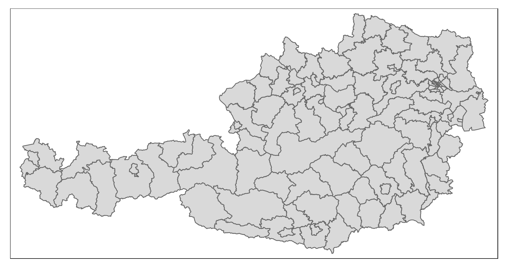
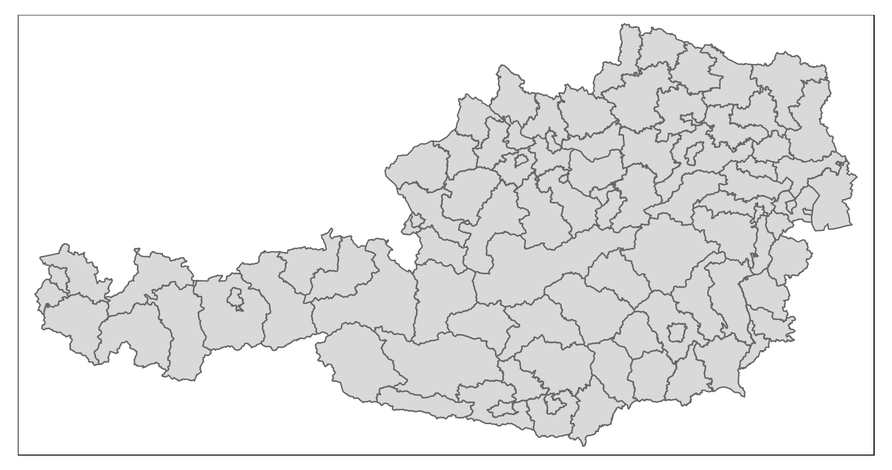
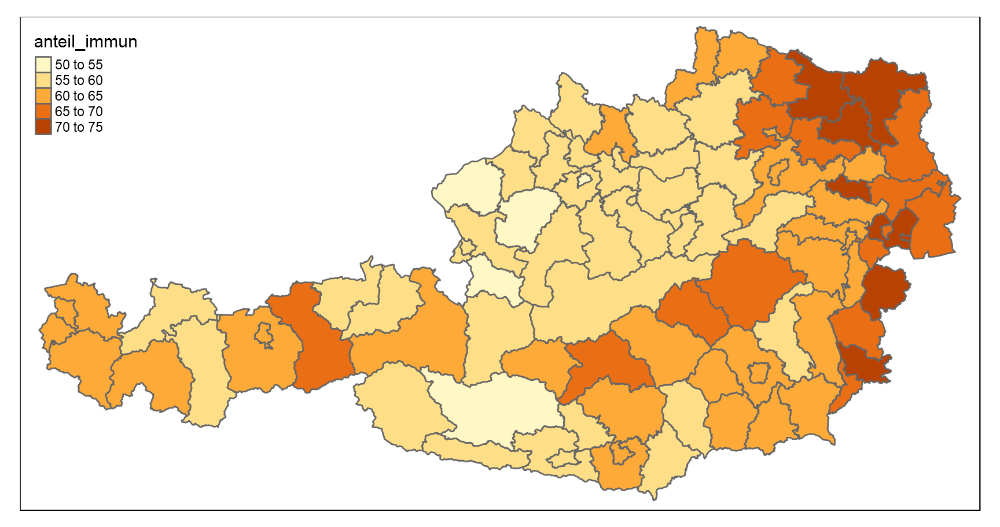
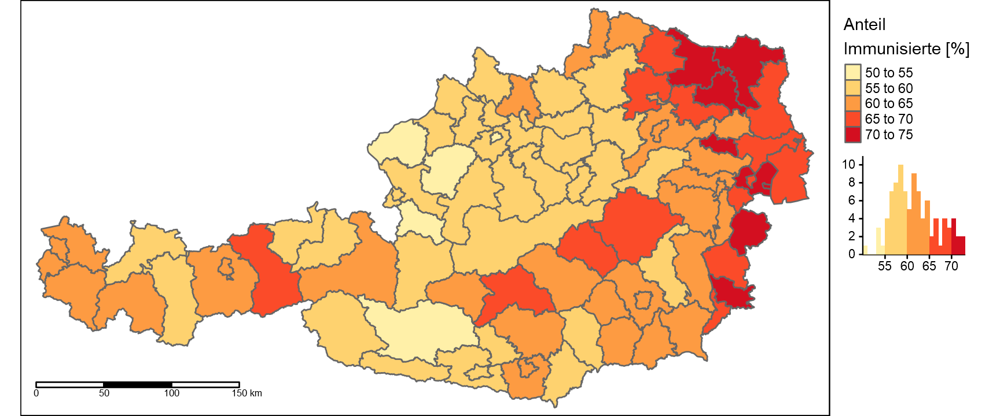
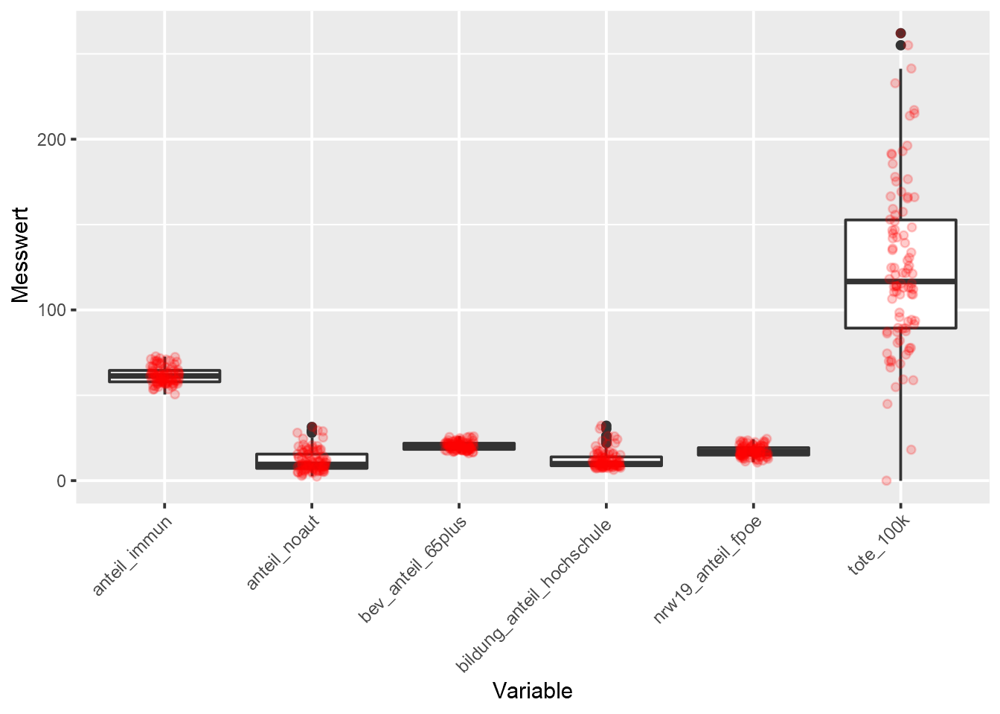
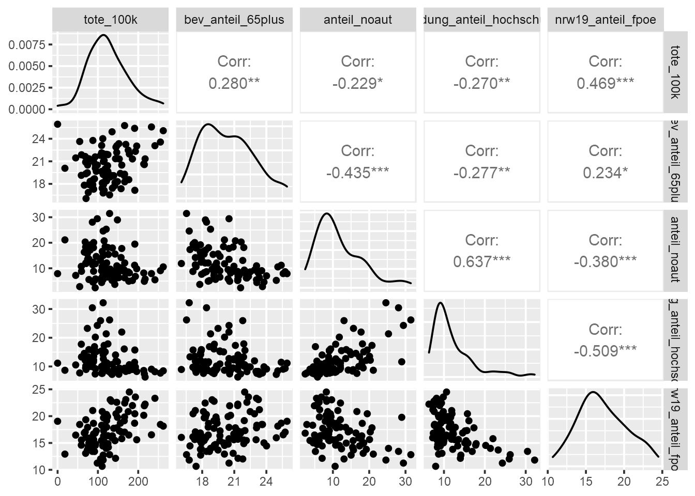
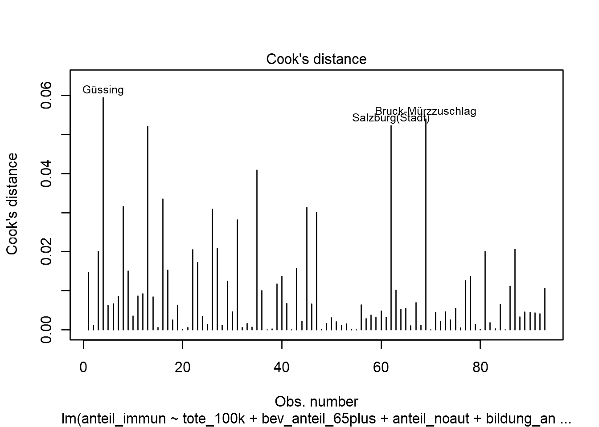
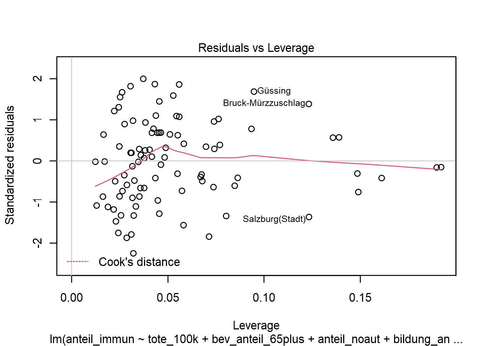

<!DOCTYPE html>
<html lang="" xml:lang="">
<head>

  <meta charset="utf-8" />
  <meta http-equiv="X-UA-Compatible" content="IE=edge" />
  <title>5 Multiple Regression I: Grundlagen linearer Modelle | How 2 do Things with even more Numbers</title>
  <meta name="description" content="5 Multiple Regression I: Grundlagen linearer Modelle | How 2 do Things with even more Numbers" />
  <meta name="generator" content="bookdown 0.24 and GitBook 2.6.7" />

  <meta property="og:title" content="5 Multiple Regression I: Grundlagen linearer Modelle | How 2 do Things with even more Numbers" />
  <meta property="og:type" content="book" />
  
  
  
  

  <meta name="twitter:card" content="summary" />
  <meta name="twitter:title" content="5 Multiple Regression I: Grundlagen linearer Modelle | How 2 do Things with even more Numbers" />
  
  
  

<meta name="author" content="Kami Höferl | https://orcid.org/0000-0002-5397-180X" />


  <meta name="viewport" content="width=device-width, initial-scale=1" />
  <meta name="apple-mobile-web-app-capable" content="yes" />
  <meta name="apple-mobile-web-app-status-bar-style" content="black" />
  
  
<link rel="prev" href="04_warmup_2.html"/>
<link rel="next" href="06_multireg_II.html"/>
<script src="libs/header-attrs-2.12/header-attrs.js"></script>
<script src="libs/jquery-3.6.0/jquery-3.6.0.min.js"></script>
<script src="https://cdn.jsdelivr.net/npm/fuse.js@6.4.6/dist/fuse.min.js"></script>
<link href="libs/gitbook-2.6.7/css/style.css" rel="stylesheet" />
<link href="libs/gitbook-2.6.7/css/plugin-table.css" rel="stylesheet" />
<link href="libs/gitbook-2.6.7/css/plugin-bookdown.css" rel="stylesheet" />
<link href="libs/gitbook-2.6.7/css/plugin-highlight.css" rel="stylesheet" />
<link href="libs/gitbook-2.6.7/css/plugin-search.css" rel="stylesheet" />
<link href="libs/gitbook-2.6.7/css/plugin-fontsettings.css" rel="stylesheet" />
<link href="libs/gitbook-2.6.7/css/plugin-clipboard.css" rel="stylesheet" />


<link href="libs/anchor-sections-1.1.0/anchor-sections.css" rel="stylesheet" />
<link href="libs/anchor-sections-1.1.0/anchor-sections-hash.css" rel="stylesheet" />
<script src="libs/anchor-sections-1.1.0/anchor-sections.js"></script>
<html>

  <head>
  <script>
    window.addEventListener("load", () => {
        const enabled = document.querySelectorAll(".fullscreen-enabled");
        for (let i = 0; i < enabled.length; i++) {
            enabled[i].style.cursor = "pointer";
            enabled[i].onclick = () => {
                enabled[i].requestFullscreen();
            };
        }
    });
  </script>
  </head>

  <body>
  <!-- body content here -->
  </body>

</html>


<style type="text/css">
pre > code.sourceCode { white-space: pre; position: relative; }
pre > code.sourceCode > span { display: inline-block; line-height: 1.25; }
pre > code.sourceCode > span:empty { height: 1.2em; }
.sourceCode { overflow: visible; }
code.sourceCode > span { color: inherit; text-decoration: inherit; }
pre.sourceCode { margin: 0; }
@media screen {
div.sourceCode { overflow: auto; }
}
@media print {
pre > code.sourceCode { white-space: pre-wrap; }
pre > code.sourceCode > span { text-indent: -5em; padding-left: 5em; }
}
pre.numberSource code
  { counter-reset: source-line 0; }
pre.numberSource code > span
  { position: relative; left: -4em; counter-increment: source-line; }
pre.numberSource code > span > a:first-child::before
  { content: counter(source-line);
    position: relative; left: -1em; text-align: right; vertical-align: baseline;
    border: none; display: inline-block;
    -webkit-touch-callout: none; -webkit-user-select: none;
    -khtml-user-select: none; -moz-user-select: none;
    -ms-user-select: none; user-select: none;
    padding: 0 4px; width: 4em;
    color: #aaaaaa;
  }
pre.numberSource { margin-left: 3em; border-left: 1px solid #aaaaaa;  padding-left: 4px; }
div.sourceCode
  {   }
@media screen {
pre > code.sourceCode > span > a:first-child::before { text-decoration: underline; }
}
code span.al { color: #ff0000; } /* Alert */
code span.an { color: #008000; } /* Annotation */
code span.at { } /* Attribute */
code span.bu { } /* BuiltIn */
code span.cf { color: #0000ff; } /* ControlFlow */
code span.ch { color: #008080; } /* Char */
code span.cn { } /* Constant */
code span.co { color: #008000; } /* Comment */
code span.cv { color: #008000; } /* CommentVar */
code span.do { color: #008000; } /* Documentation */
code span.er { color: #ff0000; font-weight: bold; } /* Error */
code span.ex { } /* Extension */
code span.im { } /* Import */
code span.in { color: #008000; } /* Information */
code span.kw { color: #0000ff; } /* Keyword */
code span.op { } /* Operator */
code span.ot { color: #ff4000; } /* Other */
code span.pp { color: #ff4000; } /* Preprocessor */
code span.sc { color: #008080; } /* SpecialChar */
code span.ss { color: #008080; } /* SpecialString */
code span.st { color: #008080; } /* String */
code span.va { } /* Variable */
code span.vs { color: #008080; } /* VerbatimString */
code span.wa { color: #008000; font-weight: bold; } /* Warning */
</style>

<style type="text/css">
/* Used with Pandoc 2.11+ new --citeproc when CSL is used */
div.csl-bib-body { }
div.csl-entry {
  clear: both;
}
.hanging div.csl-entry {
  margin-left:2em;
  text-indent:-2em;
}
div.csl-left-margin {
  min-width:2em;
  float:left;
}
div.csl-right-inline {
  margin-left:2em;
  padding-left:1em;
}
div.csl-indent {
  margin-left: 2em;
}
</style>

<link rel="stylesheet" href="style.css" type="text/css" />
</head>

<body>


  <div class="book without-animation with-summary font-size-2 font-family-1" data-basepath=".">

    <div class="book-summary">
      <nav role="navigation">

<ul class="summary">
<li><a href="index.html#howdy">Howdy*<span></span></a></li>
<li class="chapter" data-level="1" data-path="01_syllabus.html"><a href="01_syllabus.html"><i class="fa fa-check"></i><b>1</b> Ouvertüre (aka “Syllabus”)<span></span></a>
<ul>
<li class="chapter" data-level="1.1" data-path="01_syllabus.html"><a href="01_syllabus.html#lernziele"><i class="fa fa-check"></i><b>1.1</b> Lernziele<span></span></a></li>
<li class="chapter" data-level="1.2" data-path="01_syllabus.html"><a href="01_syllabus.html#zeitplanung"><i class="fa fa-check"></i><b>1.2</b> Zeitplanung<span></span></a></li>
<li class="chapter" data-level="1.3" data-path="01_syllabus.html"><a href="01_syllabus.html#rulez-of-the-game"><i class="fa fa-check"></i><b>1.3</b> Rulez of the Game<span></span></a></li>
<li class="chapter" data-level="1.4" data-path="01_syllabus.html"><a href="01_syllabus.html#bewertungskriterien"><i class="fa fa-check"></i><b>1.4</b> Bewertungskriterien<span></span></a></li>
<li class="chapter" data-level="1.5" data-path="01_syllabus.html"><a href="01_syllabus.html#formelles-zu-den-übungsarbeiten-homes"><i class="fa fa-check"></i><b>1.5</b> Formelles zu den Übungsarbeiten (@Homes)<span></span></a></li>
<li class="chapter" data-level="1.6" data-path="01_syllabus.html"><a href="01_syllabus.html#empfehlung-zur-eingesetzten-software"><i class="fa fa-check"></i><b>1.6</b> Empfehlung zur eingesetzten Software<span></span></a></li>
<li class="chapter" data-level="1.7" data-path="01_syllabus.html"><a href="01_syllabus.html#ausgewählte-hilfestellungen-zum-thema-r-und-rstudio"><i class="fa fa-check"></i><b>1.7</b> Ausgewählte Hilfestellungen zum Thema R und RStudio<span></span></a></li>
<li class="chapter" data-level="1.8" data-path="01_syllabus.html"><a href="01_syllabus.html#literatur-zur-lehrveranstaltung"><i class="fa fa-check"></i><b>1.8</b> Literatur zur Lehrveranstaltung<span></span></a></li>
</ul></li>
<li class="chapter" data-level="2" data-path="02_why.html"><a href="02_why.html"><i class="fa fa-check"></i><b>2</b> Wozu noch mehr Verfahren?<span></span></a>
<ul>
<li><a href="02_why.html#zielsetzung-dieser-einheit">📢 Zielsetzung dieser Einheit<span></span></a></li>
<li class="chapter" data-level="2.1" data-path="02_why.html"><a href="02_why.html#recap-zur-rolle-der-methoden-in-der-empirischen-forschung"><i class="fa fa-check"></i><b>2.1</b> Recap: Zur Rolle der Methoden in der empirischen Forschung<span></span></a></li>
<li class="chapter" data-level="2.2" data-path="02_why.html"><a href="02_why.html#multivariate-verfahren---ein-kurzer-überblick"><i class="fa fa-check"></i><b>2.2</b> Multivariate Verfahren - ein kurzer Überblick<span></span></a></li>
<li class="chapter" data-level="2.3" data-path="02_why.html"><a href="02_why.html#quantitative-inhaltsanalyse---ein-erster-einblick"><i class="fa fa-check"></i><b>2.3</b> Quantitative Inhaltsanalyse - ein erster Einblick<span></span></a></li>
</ul></li>
<li class="chapter" data-level="3" data-path="03_warmup_1.html"><a href="03_warmup_1.html"><i class="fa fa-check"></i><b>3</b> Warmup 1: Messen und Skalen<span></span></a>
<ul>
<li><a href="03_warmup_1.html#zielsetzung-dieser-einheit-1">📢 Zielsetzung dieser Einheit<span></span></a></li>
<li class="chapter" data-level="3.1" data-path="03_warmup_1.html"><a href="03_warmup_1.html#was-passiert-beim-messen"><i class="fa fa-check"></i><b>3.1</b> Was passiert beim Messen?<span></span></a></li>
<li class="chapter" data-level="3.2" data-path="03_warmup_1.html"><a href="03_warmup_1.html#skalenniveaus-reloaded"><i class="fa fa-check"></i><b>3.2</b> Skalenniveaus (reloaded)<span></span></a></li>
</ul></li>
<li class="chapter" data-level="4" data-path="04_warmup_2.html"><a href="04_warmup_2.html"><i class="fa fa-check"></i><b>4</b> Warmup 2: Wissenschaftliche Datenanalyse<span></span></a>
<ul>
<li><a href="04_warmup_2.html#zielsetzung-dieser-einheit-2">📢 Zielsetzung dieser Einheit<span></span></a></li>
<li class="chapter" data-level="4.1" data-path="04_warmup_2.html"><a href="04_warmup_2.html#daten-analysieren---aber-wie"><i class="fa fa-check"></i><b>4.1</b> Daten analysieren - aber wie?<span></span></a></li>
<li class="chapter" data-level="4.2" data-path="04_warmup_2.html"><a href="04_warmup_2.html#anforderungen-an-eine-wissenschaftliche-datenanalyse"><i class="fa fa-check"></i><b>4.2</b> Anforderungen an eine wissenschaftliche Datenanalyse<span></span></a></li>
<li class="chapter" data-level="4.3" data-path="04_warmup_2.html"><a href="04_warmup_2.html#daten-finden-und-validieren"><i class="fa fa-check"></i><b>4.3</b> Daten finden und validieren<span></span></a></li>
</ul></li>
<li class="chapter" data-level="5" data-path="05_multireg_I.html"><a href="05_multireg_I.html"><i class="fa fa-check"></i><b>5</b> Multiple Regression I: Grundlagen linearer Modelle<span></span></a>
<ul>
<li><a href="05_multireg_I.html#zielsetzung-dieser-einheit-3">📢 Zielsetzung dieser Einheit<span></span></a></li>
<li class="chapter" data-level="5.1" data-path="05_multireg_I.html"><a href="05_multireg_I.html#ouvert-reg1"><i class="fa fa-check"></i><b>5.1</b> Ouvertüre<span></span></a></li>
<li class="chapter" data-level="5.2" data-path="05_multireg_I.html"><a href="05_multireg_I.html#dataimport-reg1"><i class="fa fa-check"></i><b>5.2</b> Daten importieren<span></span></a></li>
<li class="chapter" data-level="5.3" data-path="05_multireg_I.html"><a href="05_multireg_I.html#daten-validieren"><i class="fa fa-check"></i><b>5.3</b> Daten validieren<span></span></a>
<ul>
<li class="chapter" data-level="5.3.1" data-path="05_multireg_I.html"><a href="05_multireg_I.html#map-impfquoten"><i class="fa fa-check"></i><b>5.3.1</b> Ein Exkurs: Die räumliche Variabilität der Impfquoten<span></span></a></li>
</ul></li>
<li class="chapter" data-level="5.4" data-path="05_multireg_I.html"><a href="05_multireg_I.html#die-mathematischen-grundlagen-linearer-modelle"><i class="fa fa-check"></i><b>5.4</b> Die mathematischen Grundlagen linearer Modelle<span></span></a></li>
<li class="chapter" data-level="5.5" data-path="05_multireg_I.html"><a href="05_multireg_I.html#die-gedankliche-modellbildung"><i class="fa fa-check"></i><b>5.5</b> Die gedankliche Modellbildung<span></span></a></li>
<li class="chapter" data-level="5.6" data-path="05_multireg_I.html"><a href="05_multireg_I.html#ein-blick-auf-die-gewählten-variablen"><i class="fa fa-check"></i><b>5.6</b> Ein Blick auf die gewählten Variablen<span></span></a>
<ul>
<li class="chapter" data-level="5.6.1" data-path="05_multireg_I.html"><a href="05_multireg_I.html#ztrans"><i class="fa fa-check"></i><b>5.6.1</b> Standardisierung von Variablen<span></span></a></li>
<li class="chapter" data-level="5.6.2" data-path="05_multireg_I.html"><a href="05_multireg_I.html#korrel-reg1"><i class="fa fa-check"></i><b>5.6.2</b> Beziehungen der Variablen zueinander<span></span></a></li>
</ul></li>
<li class="chapter" data-level="5.7" data-path="05_multireg_I.html"><a href="05_multireg_I.html#die-modellbildung"><i class="fa fa-check"></i><b>5.7</b> Die Modellbildung<span></span></a>
<ul>
<li class="chapter" data-level="5.7.1" data-path="05_multireg_I.html"><a href="05_multireg_I.html#referenzmodell"><i class="fa fa-check"></i><b>5.7.1</b> Ein alternatives Modell<span></span></a></li>
</ul></li>
<li class="chapter" data-level="5.8" data-path="05_multireg_I.html"><a href="05_multireg_I.html#annahmen"><i class="fa fa-check"></i><b>5.8</b> Überprüfung der Modellannahmen<span></span></a>
<ul>
<li class="chapter" data-level="5.8.1" data-path="05_multireg_I.html"><a href="05_multireg_I.html#prüfung-des-linearen-zusammenhangs"><i class="fa fa-check"></i><b>5.8.1</b> Prüfung des linearen Zusammenhangs<span></span></a></li>
<li class="chapter" data-level="5.8.2" data-path="05_multireg_I.html"><a href="05_multireg_I.html#prüfung-der-unabhängigkeit-der-erklärenden-variablen-multikollinearität"><i class="fa fa-check"></i><b>5.8.2</b> Prüfung der Unabhängigkeit der erklärenden Variablen (“Multikollinearität”)<span></span></a></li>
<li class="chapter" data-level="5.8.3" data-path="05_multireg_I.html"><a href="05_multireg_I.html#prüfung-der-normalverteilung-der-residuen"><i class="fa fa-check"></i><b>5.8.3</b> Prüfung der Normalverteilung der Residuen<span></span></a></li>
<li class="chapter" data-level="5.8.4" data-path="05_multireg_I.html"><a href="05_multireg_I.html#prüfung-der-konstanz-der-varianz-der-residuen-homoskedastizität"><i class="fa fa-check"></i><b>5.8.4</b> Prüfung der Konstanz der Varianz der Residuen (“Homoskedastizität”)<span></span></a></li>
<li class="chapter" data-level="5.8.5" data-path="05_multireg_I.html"><a href="05_multireg_I.html#prüfung-auf-autokorrelation"><i class="fa fa-check"></i><b>5.8.5</b> Prüfung auf Autokorrelation<span></span></a></li>
</ul></li>
</ul></li>
<li class="chapter" data-level="6" data-path="06_multireg_II.html"><a href="06_multireg_II.html"><i class="fa fa-check"></i><b>6</b> Multiple Regression II: Qualitative Variablen einbinden<span></span></a>
<ul>
<li><a href="06_multireg_II.html#zielsetzung-dieser-einheit-4">📢 Zielsetzung dieser Einheit<span></span></a></li>
<li class="chapter" data-level="6.1" data-path="06_multireg_II.html"><a href="06_multireg_II.html#ouvertüre"><i class="fa fa-check"></i><b>6.1</b> Ouvertüre<span></span></a></li>
<li class="chapter" data-level="6.2" data-path="06_multireg_II.html"><a href="06_multireg_II.html#gedankliche-modellbildung"><i class="fa fa-check"></i><b>6.2</b> Gedankliche Modellbildung<span></span></a></li>
<li class="chapter" data-level="6.3" data-path="06_multireg_II.html"><a href="06_multireg_II.html#daten-importieren"><i class="fa fa-check"></i><b>6.3</b> Daten importieren<span></span></a></li>
<li class="chapter" data-level="6.4" data-path="06_multireg_II.html"><a href="06_multireg_II.html#die-bundeslandzugehörigkeit-der-bezirke-ermitteln"><i class="fa fa-check"></i><b>6.4</b> Die Bundeslandzugehörigkeit der Bezirke ermitteln<span></span></a></li>
<li class="chapter" data-level="6.5" data-path="06_multireg_II.html"><a href="06_multireg_II.html#qualVaria"><i class="fa fa-check"></i><b>6.5</b> Qualitative Variablen in Regressionsmodellen nutzen<span></span></a></li>
<li class="chapter" data-level="6.6" data-path="06_multireg_II.html"><a href="06_multireg_II.html#der-einfluß-des-bundeslandes-auf-die-impfquote"><i class="fa fa-check"></i><b>6.6</b> Der Einfluß des Bundeslandes auf die Impfquote<span></span></a>
<ul>
<li class="chapter" data-level="6.6.1" data-path="06_multireg_II.html"><a href="06_multireg_II.html#standardisieren-der-metrischen-variablen"><i class="fa fa-check"></i><b>6.6.1</b> Standardisieren der metrischen Variablen<span></span></a></li>
<li class="chapter" data-level="6.6.2" data-path="06_multireg_II.html"><a href="06_multireg_II.html#reproduktion-unseres-referenzmodells-aus-einheit-refreg1"><i class="fa fa-check"></i><b>6.6.2</b> Reproduktion unseres Referenzmodells aus Einheit @ref(reg1)<span></span></a></li>
<li class="chapter" data-level="6.6.3" data-path="06_multireg_II.html"><a href="06_multireg_II.html#erweiterung-des-modells-um-die-bundeslandzugehörigkeit-der-bezirke"><i class="fa fa-check"></i><b>6.6.3</b> Erweiterung des Modells um die Bundeslandzugehörigkeit der Bezirke<span></span></a></li>
<li class="chapter" data-level="6.6.4" data-path="06_multireg_II.html"><a href="06_multireg_II.html#modelloptimierung"><i class="fa fa-check"></i><b>6.6.4</b> Modelloptimierung<span></span></a></li>
</ul></li>
<li class="chapter" data-level="6.7" data-path="06_multireg_II.html"><a href="06_multireg_II.html#abschließendes-prüfen-der-modellannahmen"><i class="fa fa-check"></i><b>6.7</b> Abschließendes Prüfen der Modellannahmen<span></span></a>
<ul>
<li class="chapter" data-level="6.7.1" data-path="06_multireg_II.html"><a href="06_multireg_II.html#prüfung-des-linearen-zusammenhangs-1"><i class="fa fa-check"></i><b>6.7.1</b> Prüfung des linearen Zusammenhangs<span></span></a></li>
<li class="chapter" data-level="6.7.2" data-path="06_multireg_II.html"><a href="06_multireg_II.html#prüfung-der-normalverteilung-der-residuen-1"><i class="fa fa-check"></i><b>6.7.2</b> Prüfung der Normalverteilung der Residuen<span></span></a></li>
<li class="chapter" data-level="6.7.3" data-path="06_multireg_II.html"><a href="06_multireg_II.html#prüfung-des-erwartungswerts-der-residuen"><i class="fa fa-check"></i><b>6.7.3</b> Prüfung des Erwartungswerts der Residuen<span></span></a></li>
<li class="chapter" data-level="6.7.4" data-path="06_multireg_II.html"><a href="06_multireg_II.html#prüfung-der-konstanz-der-varianz-der-residuen-homoskedastizität-1"><i class="fa fa-check"></i><b>6.7.4</b> Prüfung der Konstanz der Varianz der Residuen (“Homoskedastizität”)<span></span></a></li>
<li class="chapter" data-level="6.7.5" data-path="06_multireg_II.html"><a href="06_multireg_II.html#prüfung-auf-autokorrelation-1"><i class="fa fa-check"></i><b>6.7.5</b> Prüfung auf Autokorrelation<span></span></a></li>
</ul></li>
</ul></li>
<li class="chapter" data-level="7" data-path="07_cluster_I.html"><a href="07_cluster_I.html"><i class="fa fa-check"></i><b>7</b> Clusteranalyse I: Grundlagen<span></span></a>
<ul>
<li><a href="07_cluster_I.html#zielsetzung-dieser-einheit-5">📢 Zielsetzung dieser Einheit<span></span></a></li>
<li class="chapter" data-level="7.1" data-path="07_cluster_I.html"><a href="07_cluster_I.html#was-passiert-bei-einer-clusteranalyse"><i class="fa fa-check"></i><b>7.1</b> Was passiert bei einer Clusteranalyse?<span></span></a></li>
<li class="chapter" data-level="7.2" data-path="07_cluster_I.html"><a href="07_cluster_I.html#ein-beispiel"><i class="fa fa-check"></i><b>7.2</b> Ein Beispiel<span></span></a>
<ul>
<li class="chapter" data-level="7.2.1" data-path="07_cluster_I.html"><a href="07_cluster_I.html#ein-versuch-zur-klassifikation-der-corona-lage-in-österreich-bezirken"><i class="fa fa-check"></i><b>7.2.1</b> Ein Versuch zur Klassifikation der “Corona-Lage” in Österreich Bezirken<span></span></a></li>
</ul></li>
<li class="chapter" data-level="7.3" data-path="07_cluster_I.html"><a href="07_cluster_I.html#vorueberlegungen-cluster"><i class="fa fa-check"></i><b>7.3</b> Einige Vorüberlegungen<span></span></a>
<ul>
<li class="chapter" data-level="7.3.1" data-path="07_cluster_I.html"><a href="07_cluster_I.html#identifikation-der-zur-klassifikation-verwendeten-variablen"><i class="fa fa-check"></i><b>7.3.1</b> Identifikation der zur Klassifikation verwendeten Variablen<span></span></a></li>
<li class="chapter" data-level="7.3.2" data-path="07_cluster_I.html"><a href="07_cluster_I.html#überprüfen-der-gleichgewichtung-der-variablen"><i class="fa fa-check"></i><b>7.3.2</b> Überprüfen der Gleichgewichtung der Variablen<span></span></a></li>
<li class="chapter" data-level="7.3.3" data-path="07_cluster_I.html"><a href="07_cluster_I.html#ein-blick-auf-die-varianz-der-ausgewählten-variablen"><i class="fa fa-check"></i><b>7.3.3</b> Ein Blick auf die Varianz der ausgewählten Variablen<span></span></a></li>
<li class="chapter" data-level="7.3.4" data-path="07_cluster_I.html"><a href="07_cluster_I.html#die-identifikation-clusteranalytischer-ausreißer"><i class="fa fa-check"></i><b>7.3.4</b> Die Identifikation clusteranalytischer Ausreißer<span></span></a></li>
</ul></li>
<li class="chapter" data-level="7.4" data-path="07_cluster_I.html"><a href="07_cluster_I.html#die-clusterung-der-bezirke"><i class="fa fa-check"></i><b>7.4</b> Die Clusterung der Bezirke<span></span></a>
<ul>
<li class="chapter" data-level="7.4.1" data-path="07_cluster_I.html"><a href="07_cluster_I.html#die-anzahl-der-cluster-bestimmen"><i class="fa fa-check"></i><b>7.4.1</b> Die Anzahl der Cluster bestimmen<span></span></a></li>
</ul></li>
<li class="chapter" data-level="7.5" data-path="07_cluster_I.html"><a href="07_cluster_I.html#inhaltliche-beschreibung-der-cluster"><i class="fa fa-check"></i><b>7.5</b> Inhaltliche Beschreibung der Cluster<span></span></a></li>
<li class="chapter" data-level="7.6" data-path="07_cluster_I.html"><a href="07_cluster_I.html#darstellung-der-räumlichen-verteilung"><i class="fa fa-check"></i><b>7.6</b> Darstellung der räumlichen Verteilung<span></span></a></li>
</ul></li>
<li class="chapter" data-level="8" data-path="08_cluster_II_v2.html"><a href="08_cluster_II_v2.html"><i class="fa fa-check"></i><b>8</b> Clusteranalyse II: Gemischtskalige Modelle<span></span></a>
<ul>
<li><a href="08_cluster_II_v2.html#zielsetzung-dieser-einheit-6">📢 Zielsetzung dieser Einheit<span></span></a></li>
<li class="chapter" data-level="8.1" data-path="08_cluster_II_v2.html"><a href="08_cluster_II_v2.html#wie-funktioniert-gemischtskalige-clusterung"><i class="fa fa-check"></i><b>8.1</b> (Wie) Funktioniert gemischtskalige Clusterung?<span></span></a></li>
<li class="chapter" data-level="8.2" data-path="08_cluster_II_v2.html"><a href="08_cluster_II_v2.html#die-gower-distanz"><i class="fa fa-check"></i><b>8.2</b> Die Gower-Distanz<span></span></a></li>
<li class="chapter" data-level="8.3" data-path="08_cluster_II_v2.html"><a href="08_cluster_II_v2.html#ein-beispiel-überprüfung-der-hillbilly-these-zur-covid-19-schutzimpfung"><i class="fa fa-check"></i><b>8.3</b> Ein Beispiel: Überprüfung der “Hillbilly-These” zur COVID-19-Schutzimpfung<span></span></a></li>
<li class="chapter" data-level="8.4" data-path="08_cluster_II_v2.html"><a href="08_cluster_II_v2.html#vorueberlegungen-cluster-2"><i class="fa fa-check"></i><b>8.4</b> Einige Vorüberlegungen<span></span></a></li>
<li class="chapter" data-level="8.5" data-path="08_cluster_II_v2.html"><a href="08_cluster_II_v2.html#die-datenaufbereitung"><i class="fa fa-check"></i><b>8.5</b> Die Datenaufbereitung<span></span></a></li>
<li class="chapter" data-level="8.6" data-path="08_cluster_II_v2.html"><a href="08_cluster_II_v2.html#ein-blick-auf-die-gewählten-clustervariablen"><i class="fa fa-check"></i><b>8.6</b> Ein Blick auf die gewählten Clustervariablen<span></span></a></li>
<li class="chapter" data-level="8.7" data-path="08_cluster_II_v2.html"><a href="08_cluster_II_v2.html#ermittlung-der-ähnlichkeiten"><i class="fa fa-check"></i><b>8.7</b> Ermittlung der Ähnlichkeiten<span></span></a></li>
<li class="chapter" data-level="8.8" data-path="08_cluster_II_v2.html"><a href="08_cluster_II_v2.html#identifikation-von-ausreißern"><i class="fa fa-check"></i><b>8.8</b> Identifikation von Ausreißern<span></span></a></li>
<li class="chapter" data-level="8.9" data-path="08_cluster_II_v2.html"><a href="08_cluster_II_v2.html#clusterung-der-gemeinden"><i class="fa fa-check"></i><b>8.9</b> Clusterung der Gemeinden<span></span></a></li>
<li class="chapter" data-level="8.10" data-path="08_cluster_II_v2.html"><a href="08_cluster_II_v2.html#beurteilung-der-trennschärfe-der-gewählten-clusteranzahl"><i class="fa fa-check"></i><b>8.10</b> Beurteilung der Trennschärfe der gewählten Clusteranzahl<span></span></a></li>
<li class="chapter" data-level="8.11" data-path="08_cluster_II_v2.html"><a href="08_cluster_II_v2.html#charakterisierung-der-cluster"><i class="fa fa-check"></i><b>8.11</b> Charakterisierung der Cluster<span></span></a></li>
<li class="chapter" data-level="8.12" data-path="08_cluster_II_v2.html"><a href="08_cluster_II_v2.html#die-räumliche-verteilung-der-cluster"><i class="fa fa-check"></i><b>8.12</b> Die räumliche Verteilung der Cluster<span></span></a>
<ul>
<li class="chapter" data-level="8.12.1" data-path="08_cluster_II_v2.html"><a href="08_cluster_II_v2.html#die-datenbeschaffung--aufbereitung"><i class="fa fa-check"></i><b>8.12.1</b> Die Datenbeschaffung &amp; -aufbereitung<span></span></a></li>
<li class="chapter" data-level="8.12.2" data-path="08_cluster_II_v2.html"><a href="08_cluster_II_v2.html#die-attributdaten-joinen"><i class="fa fa-check"></i><b>8.12.2</b> Die Attributdaten joinen<span></span></a></li>
<li class="chapter" data-level="8.12.3" data-path="08_cluster_II_v2.html"><a href="08_cluster_II_v2.html#die-räumliche-verteilung-der-cluster-darstellen"><i class="fa fa-check"></i><b>8.12.3</b> Die räumliche Verteilung der Cluster darstellen<span></span></a></li>
</ul></li>
</ul></li>
<li class="chapter" data-level="9" data-path="80_atHome_2.html"><a href="80_atHome_2.html"><i class="fa fa-check"></i><b>9</b> @Home2: Multiple Regression<span></span></a>
<ul>
<li><a href="80_atHome_2.html#zielsetzung">📢 Zielsetzung<span></span></a></li>
<li class="chapter" data-level="9.1" data-path="80_atHome_2.html"><a href="80_atHome_2.html#ausgangslage"><i class="fa fa-check"></i><b>9.1</b> Ausgangslage<span></span></a></li>
<li class="chapter" data-level="9.2" data-path="80_atHome_2.html"><a href="80_atHome_2.html#aufgabenstellung"><i class="fa fa-check"></i><b>9.2</b> Aufgabenstellung<span></span></a></li>
<li class="chapter" data-level="9.3" data-path="80_atHome_2.html"><a href="80_atHome_2.html#formelles"><i class="fa fa-check"></i><b>9.3</b> Formelles<span></span></a></li>
<li class="chapter" data-level="9.4" data-path="80_atHome_2.html"><a href="80_atHome_2.html#empfehlung"><i class="fa fa-check"></i><b>9.4</b> Empfehlung<span></span></a></li>
</ul></li>
<li class="chapter" data-level="10" data-path="81_atHome_3.html"><a href="81_atHome_3.html"><i class="fa fa-check"></i><b>10</b> @Home3: Clusteranalyse<span></span></a>
<ul>
<li><a href="81_atHome_3.html#zielsetzung-1">📢 Zielsetzung<span></span></a></li>
<li class="chapter" data-level="10.1" data-path="81_atHome_3.html"><a href="81_atHome_3.html#ausgangslage-1"><i class="fa fa-check"></i><b>10.1</b> Ausgangslage<span></span></a></li>
<li class="chapter" data-level="10.2" data-path="81_atHome_3.html"><a href="81_atHome_3.html#datengrundlage"><i class="fa fa-check"></i><b>10.2</b> Datengrundlage<span></span></a></li>
<li class="chapter" data-level="10.3" data-path="81_atHome_3.html"><a href="81_atHome_3.html#aufgabenstellung-1"><i class="fa fa-check"></i><b>10.3</b> Aufgabenstellung<span></span></a></li>
<li class="chapter" data-level="10.4" data-path="81_atHome_3.html"><a href="81_atHome_3.html#formelles-1"><i class="fa fa-check"></i><b>10.4</b> Formelles<span></span></a></li>
<li class="chapter" data-level="10.5" data-path="81_atHome_3.html"><a href="81_atHome_3.html#empfehlung-1"><i class="fa fa-check"></i><b>10.5</b> Empfehlung<span></span></a></li>
</ul></li>
<li class="chapter" data-level="11" data-path="90_reporting.html"><a href="90_reporting.html"><i class="fa fa-check"></i><b>11</b> Addendum 1: Spreading the Word<span></span></a>
<ul>
<li><a href="90_reporting.html#zielsetzung-dieser-einheit-7">📢 Zielsetzung dieser Einheit<span></span></a></li>
<li class="chapter" data-level="11.1" data-path="90_reporting.html"><a href="90_reporting.html#prolog"><i class="fa fa-check"></i><b>11.1</b> Prolog<span></span></a></li>
<li class="chapter" data-level="11.2" data-path="90_reporting.html"><a href="90_reporting.html#keep-it-simple-compile"><i class="fa fa-check"></i><b>11.2</b> Keep it simple &amp; compile<span></span></a></li>
<li class="chapter" data-level="11.3" data-path="90_reporting.html"><a href="90_reporting.html#vom-skript-zum-markdown"><i class="fa fa-check"></i><b>11.3</b> Vom Skript zum Markdown<span></span></a></li>
<li class="chapter" data-level="11.4" data-path="90_reporting.html"><a href="90_reporting.html#ein-tipp-r-notebooks"><i class="fa fa-check"></i><b>11.4</b> Ein Tipp: R Notebooks<span></span></a></li>
<li class="chapter" data-level="11.5" data-path="90_reporting.html"><a href="90_reporting.html#den-nutzung-von-r-markdown-vorbereiten"><i class="fa fa-check"></i><b>11.5</b> Den Nutzung von R Markdown vorbereiten<span></span></a>
<ul>
<li class="chapter" data-level="11.5.1" data-path="90_reporting.html"><a href="90_reporting.html#installation-der-benötigten-packages"><i class="fa fa-check"></i><b>11.5.1</b> Installation der benötigten Packages<span></span></a></li>
</ul></li>
<li class="chapter" data-level="11.6" data-path="90_reporting.html"><a href="90_reporting.html#there-ist-more"><i class="fa fa-check"></i><b>11.6</b> There ist more …<span></span></a></li>
</ul></li>
<li><a href="99_lit.html#quellen">Quellen<span></span></a></li>
</ul>

      </nav>
    </div>

    <div class="book-body">
      <div class="body-inner">
        <div class="book-header" role="navigation">
          <h1>
            <i class="fa fa-circle-o-notch fa-spin"></i><a href="./">How 2 do Things with even more Numbers</a>
          </h1>
        </div>

        <div class="page-wrapper" tabindex="-1" role="main">
          <div class="page-inner">

            <section class="normal" id="section-">
<div id="reg1" class="section level1 hasAnchor" number="5">
<h1><span class="header-section-number">5</span> Multiple Regression I: Grundlagen linearer Modelle<a href="05_multireg_I.html#reg1" class="anchor-section" aria-label="Anchor link to header"></a></h1>
<div id="zielsetzung-dieser-einheit-3" class="section level2 unnumbered hasAnchor">
<h2>📢 Zielsetzung dieser Einheit<a href="#zielsetzung-dieser-einheit-3" class="anchor-section" aria-label="Anchor link to header"></a></h2>
<p>In dieser Einheit sollen die <strong>Grundlagen multipler Regression</strong> - insbesondere die Beurteilung der <strong>Modellgüte</strong> und die Überprüfung eines Modells anhand der prinzipiellen <strong>Modellannahmen</strong> linearer Regression - an einem Beispiel behandelt werden.</p>
<p>
<strong>tl;dr: </strong><a href="https://kamihoeferl.at/lehre/vu_sozwiss_2/05_multireg_I.R" type="application/octet-stream">Her mit dem Code!</a>
</p>
<hr />
</div>
<div id="ouvert-reg1" class="section level2 hasAnchor" number="5.1">
<h2><span class="header-section-number">5.1</span> Ouvertüre<a href="05_multireg_I.html#ouvert-reg1" class="anchor-section" aria-label="Anchor link to header"></a></h2>
<p>Zentrales Ziel einer multiplen linearen Regression ist das Ableiten einer abhängigen (= zu erklärenden) aus mehreren unabhängigen (= erklärenden) Variablen. Um diesen Prozess näher kennenzulernen, wollen wir versuchen, die <strong>regionale Variabilität der Corona-Schutzimpfungsquoten in Österreich</strong> zu erklären.</p>
<p>Neben ersten individuellen Motivstudien (<a href="https://www.meduniwien.ac.at/web/ueber-uns/news/news-im-oktober-2021/studie-wie-impfkampagnen-und-medienberichte-die-motivationen-von-corona-impfskeptikerinnen-beeinflussen-koennten/">Universität Wien, 2021</a>) liegen zur Erklärung der regionalen Variabilität von kommunalen und regionalen Impfquoten zum Stand Oktober 2021 erste Vermutungen zu möglichen Einflußfaktoren vor (zB <a href="https://www.momentum-institut.at/news/welche-faktoren-die-impfquote-beguenstigen">Momentum Institut, 2021</a>):</p>
<p></p>
<p>In dieser Einheit wollen wir einige dieser vermuteten Einflußfaktoren nutzen, um die unterschiedlichen Impfquoten (Stand 24.10.21) in den politischen Bezirken Österreichs zu erklären. Dazu greifen wir auf folgende Daten zurück:</p>
<ul>
<li>Corona-Impfquoten auf Gemeindeebene (BMSGPK, 2021):<br />
<a href="https://www.data.gv.at/katalog/dataset/covid-19-schutzimpfungen-impfungen-in-gemeinden" class="uri">https://www.data.gv.at/katalog/dataset/covid-19-schutzimpfungen-impfungen-in-gemeinden</a></li>
<li>Corona-Fallzahlen des Epidemiologischen Meldesystems (BMSGPK, 2021):<br />
<a href="https://www.data.gv.at/katalog/dataset/covid-19-daten-covid19-faelle-je-gkz/resource/91528b11-44cf-4c03-ad62-209f8a704f9b" class="uri">https://www.data.gv.at/katalog/dataset/covid-19-daten-covid19-faelle-je-gkz/resource/91528b11-44cf-4c03-ad62-209f8a704f9b</a></li>
<li>Ergebnisse der Nationalratswahl 2019 (BMI, 2019):<br />
<a href="https://www.data.gv.at/katalog/dataset/ergebnisse-der-nationalratswahl-2019-aviso" class="uri">https://www.data.gv.at/katalog/dataset/ergebnisse-der-nationalratswahl-2019-aviso</a></li>
<li>Bevölkerung (2021) nach Staatsangehörigkeit (Statistik Austria, 2021):<br />
<a href="https://www.statistik.at/web_de/statistiken/menschen_und_gesellschaft/bevoelkerung/bevoelkerungsstruktur/bevoelkerung_nach_staatsangehoerigkeit_geburtsland/index.html" class="uri">https://www.statistik.at/web_de/statistiken/menschen_und_gesellschaft/bevoelkerung/bevoelkerungsstruktur/bevoelkerung_nach_staatsangehoerigkeit_geburtsland/index.html</a></li>
<li>Bevölkerung (2019) nach Altersgruppen (Statistik Austria, 2019):<br />
<a href="http://www.statistik.at/web_de/statistiken/menschen_und_gesellschaft/bevoelkerung/volkszaehlungen_registerzaehlungen_abgestimmte_erwerbsstatistik/bevoelkerung_nach_demographischen_merkmalen/index.html?utm_source=pocket_mylist">http://www.statistik.at/web_de/statistiken/menschen_und_gesellschaft/bevoelkerung/volkszaehlungen_registerzaehlungen_abgestimmte_erwerbsstatistik/bevoelkerung_nach_demographischen_merkmalen/index.html</a></li>
<li>Bildungsstand der Bevölkerung (2019 - Statistik Austria, 2020):<br />
<a href="https://www.statistik.at/web_de/statistiken/menschen_und_gesellschaft/bildung/bildungsstand_der_bevoelkerung/index.html" class="uri">https://www.statistik.at/web_de/statistiken/menschen_und_gesellschaft/bildung/bildungsstand_der_bevoelkerung/index.html</a></li>
</ul>
<p>Diese Datensätze wurden in einer Excel-Datei gesammelt, mittels Aggregation auf die einheitliche Bezugsebene der politischen Bezirke gebracht und im Tabellenblatt “ex” miteinander verknüpft.</p>
<p><a href="data/corona_bez_regression_v1.xlsx"><strong>🚩 Die Excel-Datei kann hier heruntergeladen werden 🚩</strong></a></p>
<p>Neben diesen numerischen Daten nutzen wir in dieser Einheit auch folgenden Geodatensatz zur Visualisierung der Impfquoten:</p>
<ul>
<li>Politische Bezirke Österreichs 2021:<br />
<a href="https://www.data.gv.at/katalog/dataset/stat_gliederung-osterreichs-in-politische-bezirke131e2/resource/d2659aca-306f-4e24-a318-bf9cfb32319f" class="uri">https://www.data.gv.at/katalog/dataset/stat_gliederung-osterreichs-in-politische-bezirke131e2/resource/d2659aca-306f-4e24-a318-bf9cfb32319f</a></li>
</ul>
<p>Den Inhalt dieses <strong>ZIP-Archivs extrahieren</strong> wir in unserem “data” Ordner in den <strong>Unterordner “bez”</strong>.</p>
<blockquote>
<p><strong>👉 Anmerkung</strong>: Wir gehen in dieser Einheit von folgender Verzeichnisstruktur aus:</p>
</blockquote>
<pre><code>**Projektfolder**
| skript_1.R
| ...
| skript_n.R    
+-- data
|     bez
|       | geodatensatz_1.xyz
|       | ...
|       | geodatensatz_n.xyz
|     | datensatz_1.xyz
|     | ...
|     | datensatz_n.xyz
+-- output</code></pre>
</div>
<div id="dataimport-reg1" class="section level2 hasAnchor" number="5.2">
<h2><span class="header-section-number">5.2</span> Daten importieren<a href="05_multireg_I.html#dataimport-reg1" class="anchor-section" aria-label="Anchor link to header"></a></h2>
<p>Über das <strong>readxl-Package</strong> laden wir zunächst die Daten aus dem Tabellenblatt “ex”:</p>
<div class="sourceCode" id="cb2"><pre class="sourceCode r"><code class="sourceCode r"><span id="cb2-1"><a href="05_multireg_I.html#cb2-1" aria-hidden="true" tabindex="-1"></a><span class="fu">library</span>(readxl)     <span class="co"># Excel-Dateien lesen</span></span>
<span id="cb2-2"><a href="05_multireg_I.html#cb2-2" aria-hidden="true" tabindex="-1"></a><span class="fu">library</span>(tidyverse)  <span class="co"># https://www.tidyverse.org/packages/</span></span>
<span id="cb2-3"><a href="05_multireg_I.html#cb2-3" aria-hidden="true" tabindex="-1"></a></span>
<span id="cb2-4"><a href="05_multireg_I.html#cb2-4" aria-hidden="true" tabindex="-1"></a>daten <span class="ot">&lt;-</span> <span class="fu">read_excel</span>(<span class="st">&quot;data/corona_bez_regression_v1.xlsx&quot;</span>, <span class="at">sheet =</span> <span class="st">&quot;ex&quot;</span>)</span></code></pre></div>
<p>Damit erhalten wir:</p>
<div class="sourceCode" id="cb3"><pre class="sourceCode r"><code class="sourceCode r"><span id="cb3-1"><a href="05_multireg_I.html#cb3-1" aria-hidden="true" tabindex="-1"></a><span class="fu">head</span>(daten)</span></code></pre></div>
<pre><code>## # A tibble: 6 x 10
##   bez_id bez_txt anteil_immun tote_100k bev_anteil_65pl~
##    &lt;dbl&gt; &lt;chr&gt;          &lt;dbl&gt;     &lt;dbl&gt;            &lt;dbl&gt;
## 1    101 Eisens~         69.7      73.9             19.5
## 2    102 Rust(S~         70.4       0               25.9
## 3    103 Eisens~         71.7      59.3             21.9
## 4    104 Güssing         70.1     233.              25.6
## 5    105 Jenner~         67.0     152.              23.3
## 6    106 Matter~         68.7      89.3             21.0
## # ... with 5 more variables: bev_avg_alter &lt;dbl&gt;,
## #   anteil_noaut &lt;dbl&gt;,
## #   bildung_anteil_hochschule &lt;dbl&gt;,
## #   bildung_anteil_pflicht &lt;dbl&gt;,
## #   nrw19_anteil_fpoe &lt;dbl&gt;</code></pre>
<p>Also viele Daten. Einen schnellen Einblick in die Struktur dieser Daten erhalten wir hiermit:</p>
<div class="sourceCode" id="cb5"><pre class="sourceCode r"><code class="sourceCode r"><span id="cb5-1"><a href="05_multireg_I.html#cb5-1" aria-hidden="true" tabindex="-1"></a>  <span class="fu">str</span>(daten)</span></code></pre></div>
<pre><code>## tibble [117 x 10] (S3: tbl_df/tbl/data.frame)
##  $ bez_id                   : num [1:117] 101 102 103 104 105 106 107 108 109 201 ...
##  $ bez_txt                  : chr [1:117] &quot;Eisenstadt(Stadt)&quot; &quot;Rust(Stadt)&quot; &quot;Eisenstadt-Umgebung&quot; &quot;Güssing&quot; ...
##  $ anteil_immun             : num [1:117] 69.7 70.3 71.7 70.1 67 ...
##  $ tote_100k                : num [1:117] 73.9 0 59.3 232.8 152 ...
##  $ bev_anteil_65plus        : num [1:117] 19.5 25.9 21.9 25.6 23.3 ...
##  $ bev_avg_alter            : num [1:117] 43.5 47.2 45.3 47.8 47.4 44.6 44.7 46.8 45.5 44.2 ...
##  $ anteil_noaut             : num [1:117] 15.67 7.9 8.82 7.92 6.35 ...
##  $ bildung_anteil_hochschule: num [1:117] 23.26 11.17 13.32 9.07 7.29 ...
##  $ bildung_anteil_pflicht   : num [1:117] 12.6 13.8 13.3 19.5 18.6 ...
##  $ nrw19_anteil_fpoe        : num [1:117] 13.7 19 15.6 16.5 21.2 ...</code></pre>
</div>
<div id="daten-validieren" class="section level2 hasAnchor" number="5.3">
<h2><span class="header-section-number">5.3</span> Daten validieren<a href="05_multireg_I.html#daten-validieren" class="anchor-section" aria-label="Anchor link to header"></a></h2>
<p>Wir werfen eine Blick auf die Daten, v.a. auf fehlende Werte. Dazu gibt es mehrere Vorgehensweisen. Beispielsweise können über die <a href="https://stat.ethz.ch/R-manual/R-devel/library/base/html/colSums.html">::colSums::</a>-Funktion Spalten aufsummiert werden:</p>
<div class="sourceCode" id="cb7"><pre class="sourceCode r"><code class="sourceCode r"><span id="cb7-1"><a href="05_multireg_I.html#cb7-1" aria-hidden="true" tabindex="-1"></a><span class="fu">colSums</span>(<span class="fu">is.na</span>(daten)) <span class="sc">%&gt;%</span></span>
<span id="cb7-2"><a href="05_multireg_I.html#cb7-2" aria-hidden="true" tabindex="-1"></a>  knitr<span class="sc">::</span><span class="fu">kable</span>()</span></code></pre></div>
<table>
<thead>
<tr class="header">
<th align="left"></th>
<th align="right">x</th>
</tr>
</thead>
<tbody>
<tr class="odd">
<td align="left">bez_id</td>
<td align="right">0</td>
</tr>
<tr class="even">
<td align="left">bez_txt</td>
<td align="right">0</td>
</tr>
<tr class="odd">
<td align="left">anteil_immun</td>
<td align="right">0</td>
</tr>
<tr class="even">
<td align="left">tote_100k</td>
<td align="right">23</td>
</tr>
<tr class="odd">
<td align="left">bev_anteil_65plus</td>
<td align="right">0</td>
</tr>
<tr class="even">
<td align="left">bev_avg_alter</td>
<td align="right">0</td>
</tr>
<tr class="odd">
<td align="left">anteil_noaut</td>
<td align="right">0</td>
</tr>
<tr class="even">
<td align="left">bildung_anteil_hochschule</td>
<td align="right">0</td>
</tr>
<tr class="odd">
<td align="left">bildung_anteil_pflicht</td>
<td align="right">0</td>
</tr>
<tr class="even">
<td align="left">nrw19_anteil_fpoe</td>
<td align="right">0</td>
</tr>
</tbody>
</table>
<p><strong>Alternativ</strong> ermöglicht das <strong>dplyr-Package</strong> es uns mittels <a href="https://dplyr.tidyverse.org/reference/across.html">::across::</a> beliebige Funktionen auf (ausgewählte - hier exemplarisch nur numerische) Spalten anzuwenden:</p>
<div class="sourceCode" id="cb8"><pre class="sourceCode r"><code class="sourceCode r"><span id="cb8-1"><a href="05_multireg_I.html#cb8-1" aria-hidden="true" tabindex="-1"></a>daten <span class="sc">%&gt;%</span></span>
<span id="cb8-2"><a href="05_multireg_I.html#cb8-2" aria-hidden="true" tabindex="-1"></a>  <span class="fu">summarise</span>(<span class="fu">across</span>(<span class="fu">where</span>(is.numeric), <span class="sc">~</span> <span class="fu">sum</span>(<span class="fu">is.na</span>(.)))) <span class="sc">%&gt;%</span></span>
<span id="cb8-3"><a href="05_multireg_I.html#cb8-3" aria-hidden="true" tabindex="-1"></a>  <span class="fu">t</span>() <span class="sc">%&gt;%</span></span>
<span id="cb8-4"><a href="05_multireg_I.html#cb8-4" aria-hidden="true" tabindex="-1"></a>  knitr<span class="sc">::</span><span class="fu">kable</span>()</span></code></pre></div>
<table>
<tbody>
<tr class="odd">
<td align="left">bez_id</td>
<td align="right">0</td>
</tr>
<tr class="even">
<td align="left">anteil_immun</td>
<td align="right">0</td>
</tr>
<tr class="odd">
<td align="left">tote_100k</td>
<td align="right">23</td>
</tr>
<tr class="even">
<td align="left">bev_anteil_65plus</td>
<td align="right">0</td>
</tr>
<tr class="odd">
<td align="left">bev_avg_alter</td>
<td align="right">0</td>
</tr>
<tr class="even">
<td align="left">anteil_noaut</td>
<td align="right">0</td>
</tr>
<tr class="odd">
<td align="left">bildung_anteil_hochschule</td>
<td align="right">0</td>
</tr>
<tr class="even">
<td align="left">bildung_anteil_pflicht</td>
<td align="right">0</td>
</tr>
<tr class="odd">
<td align="left">nrw19_anteil_fpoe</td>
<td align="right">0</td>
</tr>
</tbody>
</table>
<p>Egal wie ermittelt, wir sehen, dass für die 23 Wiener Stadtbezirke keine Informationen zur Corona-bedingten Sterblichkeiten vorliegen. Da diese Informationen jedoch für die Stadt Wien gesamt vorliegen, können wir die Wiener Stadtbezirke (bez_id von 901 bis 923) bei unseren weiteren Analyse ausschließen.</p>
<div id="map-impfquoten" class="section level3 hasAnchor" number="5.3.1">
<h3><span class="header-section-number">5.3.1</span> Ein Exkurs: Die räumliche Variabilität der Impfquoten<a href="05_multireg_I.html#map-impfquoten" class="anchor-section" aria-label="Anchor link to header"></a></h3>
<p>Bevor wir das Regressionsmodell bilden, wollen wir noch einen Blick auf die räumliche Verteilung der Impfquoten legen. Aber wie?</p>
<p>Mittels des <a href="https://cran.r-project.org/web/packages/sf/index.html">Simple Features (sf) Packages</a> können gängige Geodatenformate (zB SHP-Dateien) in R gelesen und beispielsweise über das <a href="https://cran.r-project.org/web/packages/tmap/index.html">Thematic Maps (tmap) Package</a> visualisiert werden:</p>
<div class="sourceCode" id="cb9"><pre class="sourceCode r"><code class="sourceCode r"><span id="cb9-1"><a href="05_multireg_I.html#cb9-1" aria-hidden="true" tabindex="-1"></a><span class="fu">library</span>(sf)</span></code></pre></div>
<pre><code>## Linking to GEOS 3.9.1, GDAL 3.2.1, PROJ 7.2.1; sf_use_s2() is TRUE</code></pre>
<div class="sourceCode" id="cb11"><pre class="sourceCode r"><code class="sourceCode r"><span id="cb11-1"><a href="05_multireg_I.html#cb11-1" aria-hidden="true" tabindex="-1"></a><span class="fu">library</span>(tmap)</span>
<span id="cb11-2"><a href="05_multireg_I.html#cb11-2" aria-hidden="true" tabindex="-1"></a>bez <span class="ot">&lt;-</span> <span class="fu">read_sf</span>(<span class="st">&quot;data/bez/STATISTIK_AUSTRIA_POLBEZ_20210101.shp&quot;</span>)</span>
<span id="cb11-3"><a href="05_multireg_I.html#cb11-3" aria-hidden="true" tabindex="-1"></a>bez<span class="sc">$</span>id <span class="ot">&lt;-</span> <span class="fu">as.integer</span>(bez<span class="sc">$</span>id)</span>
<span id="cb11-4"><a href="05_multireg_I.html#cb11-4" aria-hidden="true" tabindex="-1"></a><span class="fu">tm_shape</span>(bez) <span class="sc">+</span></span>
<span id="cb11-5"><a href="05_multireg_I.html#cb11-5" aria-hidden="true" tabindex="-1"></a>  <span class="fu">tm_polygons</span>()</span></code></pre></div>
<p></p>
<p>Die PerfektionistInnen haben es bereits erkannt: Wien wird wieder als Summe seiner Stadtbezirke dargestellt. Ein Blick in den Geodatensatz verrät uns …</p>
<div class="sourceCode" id="cb12"><pre class="sourceCode r"><code class="sourceCode r"><span id="cb12-1"><a href="05_multireg_I.html#cb12-1" aria-hidden="true" tabindex="-1"></a>bez <span class="sc">%&gt;%</span></span>
<span id="cb12-2"><a href="05_multireg_I.html#cb12-2" aria-hidden="true" tabindex="-1"></a>  <span class="fu">filter</span>(id <span class="sc">&gt;=</span> <span class="dv">900</span>)</span></code></pre></div>
<pre><code>## Simple feature collection with 24 features and 2 fields
## Geometry type: MULTIPOLYGON
## Dimension:     XY
## Bounding box:  xmin: 611820.2 ymin: 473150.1 xmax: 641316 ymax: 496035.8
## Projected CRS: MGI / Austria Lambert
## # A tibble: 24 x 3
##       id name                                   geometry
##  * &lt;int&gt; &lt;chr&gt;                        &lt;MULTIPOLYGON [m]&gt;
##  1   900 Wien(Stadt)           (((633092.9 476663.5, 63~
##  2   901 Wien  1.,Innere Stadt (((625604.8 482342.7, 62~
##  3   902 Wien  2.,Leopoldstadt (((626800.3 483669.1, 62~
##  4   903 Wien  3.,Landstraße   (((629078 480766.2, 6290~
##  5   904 Wien  4.,Wieden       (((625990.5 480617.3, 62~
##  6   905 Wien  5.,Margareten   (((625375.6 480306.9, 62~
##  7   906 Wien  6.,Mariahilf    (((623857.6 480935.6, 62~
##  8   907 Wien  7.,Neubau       (((623411.1 481718.7, 62~
##  9   908 Wien  8.,Josefstadt   (((624396.9 482942.4, 62~
## 10   909 Wien  9.,Alsergrund   (((624209.9 483872.5, 62~
## # ... with 14 more rows</code></pre>
<p>… dass für den politischen Bezirk Wien bereits ein Polygon vorhanden ist, jedoch von den Polygonen der Stadtbezirke überlagert wird. Um diese Überlagerung zu vermeiden, entfernen (= filtern) wir die Wiener Stadtbezirke aus dem Geodatensatz “bez”:</p>
<div class="sourceCode" id="cb14"><pre class="sourceCode r"><code class="sourceCode r"><span id="cb14-1"><a href="05_multireg_I.html#cb14-1" aria-hidden="true" tabindex="-1"></a>bez.sel <span class="ot">&lt;-</span> bez <span class="sc">%&gt;%</span></span>
<span id="cb14-2"><a href="05_multireg_I.html#cb14-2" aria-hidden="true" tabindex="-1"></a>  <span class="fu">filter</span>(id <span class="sc">&lt;=</span> <span class="dv">900</span>)</span>
<span id="cb14-3"><a href="05_multireg_I.html#cb14-3" aria-hidden="true" tabindex="-1"></a><span class="fu">tm_shape</span>(bez.sel) <span class="sc">+</span></span>
<span id="cb14-4"><a href="05_multireg_I.html#cb14-4" aria-hidden="true" tabindex="-1"></a>  <span class="fu">tm_polygons</span>()</span></code></pre></div>
<p></p>
<p>Sieht doch gleich besser aus 😎</p>
<p>Jetzt müssen wir nur noch unsere <strong>Attributdaten</strong> - die Impfquoten aus dem daten-Tibble - an die Geometrien der Bezirke hängen. Wie aus der Geoinformatik bekannt, verwenden wir dazu einen <strong>Join</strong> (konkret: die <a href="https://dplyr.tidyverse.org/reference/mutate-joins.html">left_join Funktion</a> des <a href="https://dplyr.tidyverse.org/">dplyr Packages</a>):</p>
<div class="sourceCode" id="cb15"><pre class="sourceCode r"><code class="sourceCode r"><span id="cb15-1"><a href="05_multireg_I.html#cb15-1" aria-hidden="true" tabindex="-1"></a>joined_bez.sel <span class="ot">&lt;-</span> <span class="fu">left_join</span>(bez.sel, daten,</span>
<span id="cb15-2"><a href="05_multireg_I.html#cb15-2" aria-hidden="true" tabindex="-1"></a>                            <span class="at">by =</span> <span class="fu">c</span>(<span class="st">&quot;id&quot;</span> <span class="ot">=</span> <span class="st">&quot;bez_id&quot;</span>))</span>
<span id="cb15-3"><a href="05_multireg_I.html#cb15-3" aria-hidden="true" tabindex="-1"></a><span class="fu">str</span>(joined_bez.sel)</span></code></pre></div>
<pre><code>## sf [94 x 12] (S3: sf/tbl_df/tbl/data.frame)
##  $ id                       : num [1:94] 101 102 103 104 105 106 107 108 109 201 ...
##  $ name                     : chr [1:94] &quot;Eisenstadt(Stadt)&quot; &quot;Rust(Stadt)&quot; &quot;Eisenstadt-Umgebung&quot; &quot;Güssing&quot; ...
##  $ geometry                 :sfc_MULTIPOLYGON of length 94; first list element: List of 1
##   ..$ :List of 1
##   .. ..$ : num [1:1127, 1:2] 640982 640979 640912 640861 640842 ...
##   ..- attr(*, &quot;class&quot;)= chr [1:3] &quot;XY&quot; &quot;MULTIPOLYGON&quot; &quot;sfg&quot;
##  $ bez_txt                  : chr [1:94] &quot;Eisenstadt(Stadt)&quot; &quot;Rust(Stadt)&quot; &quot;Eisenstadt-Umgebung&quot; &quot;Güssing&quot; ...
##  $ anteil_immun             : num [1:94] 69.7 70.3 71.7 70.1 67 ...
##  $ tote_100k                : num [1:94] 73.9 0 59.3 232.8 152 ...
##  $ bev_anteil_65plus        : num [1:94] 19.5 25.9 21.9 25.6 23.3 ...
##  $ bev_avg_alter            : num [1:94] 43.5 47.2 45.3 47.8 47.4 44.6 44.7 46.8 45.5 44.2 ...
##  $ anteil_noaut             : num [1:94] 15.67 7.9 8.82 7.92 6.35 ...
##  $ bildung_anteil_hochschule: num [1:94] 23.26 11.17 13.32 9.07 7.29 ...
##  $ bildung_anteil_pflicht   : num [1:94] 12.6 13.8 13.3 19.5 18.6 ...
##  $ nrw19_anteil_fpoe        : num [1:94] 13.7 19 15.6 16.5 21.2 ...
##  - attr(*, &quot;sf_column&quot;)= chr &quot;geometry&quot;
##  - attr(*, &quot;agr&quot;)= Factor w/ 3 levels &quot;constant&quot;,&quot;aggregate&quot;,..: NA NA NA NA NA NA NA NA NA NA ...
##   ..- attr(*, &quot;names&quot;)= chr [1:11] &quot;id&quot; &quot;name&quot; &quot;bez_txt&quot; &quot;anteil_immun&quot; ...</code></pre>
<p>Damit können wir nun eine einfache <a href="https://de.wikipedia.org/wiki/Choroplethenkarte">Choroplethenkarte</a> zur Impfquote erstellen:</p>
<div class="sourceCode" id="cb17"><pre class="sourceCode r"><code class="sourceCode r"><span id="cb17-1"><a href="05_multireg_I.html#cb17-1" aria-hidden="true" tabindex="-1"></a>tmap<span class="sc">::</span><span class="fu">qtm</span>(joined_bez.sel, <span class="at">fill =</span> <span class="st">&quot;anteil_immun&quot;</span>)</span></code></pre></div>
<p></p>
<p>Und wer das gerne noch mit etwas mehr 🚀 🎉 möchte:</p>
<div class="sourceCode" id="cb18"><pre class="sourceCode r"><code class="sourceCode r"><span id="cb18-1"><a href="05_multireg_I.html#cb18-1" aria-hidden="true" tabindex="-1"></a>mymap <span class="ot">&lt;-</span> <span class="fu">tm_shape</span>(joined_bez.sel) <span class="sc">+</span></span>
<span id="cb18-2"><a href="05_multireg_I.html#cb18-2" aria-hidden="true" tabindex="-1"></a>  <span class="fu">tm_polygons</span>(<span class="st">&quot;anteil_immun&quot;</span>,</span>
<span id="cb18-3"><a href="05_multireg_I.html#cb18-3" aria-hidden="true" tabindex="-1"></a>              <span class="at">title =</span> <span class="st">&quot;Anteil </span><span class="sc">\n</span><span class="st">Immunisierte [%]&quot;</span>,</span>
<span id="cb18-4"><a href="05_multireg_I.html#cb18-4" aria-hidden="true" tabindex="-1"></a>              <span class="at">palette =</span> <span class="st">&quot;YlOrRd&quot;</span>,</span>
<span id="cb18-5"><a href="05_multireg_I.html#cb18-5" aria-hidden="true" tabindex="-1"></a>              <span class="at">legend.hist =</span> <span class="cn">TRUE</span>) <span class="sc">+</span></span>
<span id="cb18-6"><a href="05_multireg_I.html#cb18-6" aria-hidden="true" tabindex="-1"></a>  <span class="fu">tm_scale_bar</span>(<span class="at">position =</span> <span class="fu">c</span>(<span class="st">&quot;left&quot;</span>, <span class="st">&quot;bottom&quot;</span>)) <span class="sc">+</span></span>
<span id="cb18-7"><a href="05_multireg_I.html#cb18-7" aria-hidden="true" tabindex="-1"></a>  <span class="fu">tm_legend</span>(<span class="at">outside =</span> <span class="cn">TRUE</span>,</span>
<span id="cb18-8"><a href="05_multireg_I.html#cb18-8" aria-hidden="true" tabindex="-1"></a>            <span class="at">legend.outside.size =</span> <span class="fl">0.15</span>,</span>
<span id="cb18-9"><a href="05_multireg_I.html#cb18-9" aria-hidden="true" tabindex="-1"></a>            <span class="at">hist.width =</span> <span class="dv">1</span>,</span>
<span id="cb18-10"><a href="05_multireg_I.html#cb18-10" aria-hidden="true" tabindex="-1"></a>            <span class="at">outer.margins =</span> <span class="dv">0</span>)</span>
<span id="cb18-11"><a href="05_multireg_I.html#cb18-11" aria-hidden="true" tabindex="-1"></a>mymap</span></code></pre></div>
<p></p>
<p><strong>Was zeigen uns diese Karten?</strong></p>
<ol style="list-style-type: decimal">
<li>Man kann in R auch thematische Karten erstellen 😉</li>
<li>Die Bezirke im Burgenland und dem nördlichen Niederösterreich weisen die höchsten Impfquoten auf. Weiters sehen wir, dass einige Bezirke in der Mur-Mürz-Furche sowie der Bezirk Schwaz in Tirol hervorstechen.</li>
</ol>
<p>Zum Abschluß dieses Exkurses: Wie kann ich solche <strong>Karten speichern</strong> (zB in den Ordner “output”)?</p>
<div class="sourceCode" id="cb19"><pre class="sourceCode r"><code class="sourceCode r"><span id="cb19-1"><a href="05_multireg_I.html#cb19-1" aria-hidden="true" tabindex="-1"></a><span class="fu">tmap_save</span>(mymap, <span class="at">filename =</span> <span class="st">&quot;output/impfquoten_bez_2021.png&quot;</span>,</span>
<span id="cb19-2"><a href="05_multireg_I.html#cb19-2" aria-hidden="true" tabindex="-1"></a>          <span class="at">units =</span> <span class="st">&quot;px&quot;</span>, <span class="at">dpi =</span> <span class="dv">300</span>,</span>
<span id="cb19-3"><a href="05_multireg_I.html#cb19-3" aria-hidden="true" tabindex="-1"></a>          <span class="at">width =</span> <span class="dv">2000</span>)</span></code></pre></div>
<p>Moving on:</p>
</div>
</div>
<div id="die-mathematischen-grundlagen-linearer-modelle" class="section level2 hasAnchor" number="5.4">
<h2><span class="header-section-number">5.4</span> Die mathematischen Grundlagen linearer Modelle<a href="05_multireg_I.html#die-mathematischen-grundlagen-linearer-modelle" class="anchor-section" aria-label="Anchor link to header"></a></h2>
<p>Damit kommen wir zum eigentlich Kern: Wie können wir die Impfquoten (anteil_immun) aus den restlichen Variablen dieses Datensatzes ableiten?</p>
<p>Dazu werden wir ein <strong>lineares Modell</strong> nach diesem Vorbild schaffen:</p>
<p><span class="math display">\[\hat{Y} = b_0 + b_1x_1 + b_2x_2 + ... +b_Jx_J\]</span></p>
<p><span class="math display">\[\begin{aligned}
  &amp; \hat{Y}~ ...~abhängige~Variable\\
  &amp; b_{0...j}~...~Koeffizienten\\
  &amp; x_{1...j}~...~unabhängige~Variablen\\
  &amp; J~...~Zahl~der~unabhängigen~Variablen
\end{aligned}\]</span></p>
<p>Für dieses Modell wird die Summe der Differenzen (“Residuen”) zwischen die modellierten (“Fitted values”) und beobachteten Werten minimiert:</p>
<p><span class="math display">\[
\sum_{k=1}^{K}e_{k}^2 = \sum_{k=1}^{K}[y_k-(b_0 + b_1x_{1k} + b_2x_{2k} + ... +b_jx_{Jk})]^2 \rightarrow min
\]</span></p>
<p><span class="math display">\[\begin{aligned}
  &amp; e_k~...~Residuum~(k = 1, 2, ... K)\\
  &amp; y_k~...~Werte~abhängige~Variable~(k = 1, 2, ... K)\\
  &amp; b_0~...~Konstante~(&#39;Intercept&#39;)\\
  &amp; b_j~...~Koeffizienten~(j=1,2,...,J)\\
  &amp; x_{jk}~...~Werte~unabhängige~Variablen (j=1,2,...,J; k=1,2,...,K)\\
  &amp; J~...~Zahl~der~unabhängigen~Variablen\\
  &amp; K~...~Zahl~der~Beobachtungen
\end{aligned}\]</span></p>
<p>Bevor es aber so weit ist:</p>
</div>
<div id="die-gedankliche-modellbildung" class="section level2 hasAnchor" number="5.5">
<h2><span class="header-section-number">5.5</span> Die gedankliche Modellbildung<a href="05_multireg_I.html#die-gedankliche-modellbildung" class="anchor-section" aria-label="Anchor link to header"></a></h2>
<p>Wir sollten uns zunächst darüber klar werden, mit <strong>welchen Variablen</strong> wir den Impfquoten der Bezirke erklären wollen. Dazu ein Blick auf die verfügbaren Daten:</p>
<div class="sourceCode" id="cb20"><pre class="sourceCode r"><code class="sourceCode r"><span id="cb20-1"><a href="05_multireg_I.html#cb20-1" aria-hidden="true" tabindex="-1"></a><span class="fu">cbind</span>(<span class="fu">colnames</span>(daten))</span></code></pre></div>
<pre><code>##       [,1]                       
##  [1,] &quot;bez_id&quot;                   
##  [2,] &quot;bez_txt&quot;                  
##  [3,] &quot;anteil_immun&quot;             
##  [4,] &quot;tote_100k&quot;                
##  [5,] &quot;bev_anteil_65plus&quot;        
##  [6,] &quot;bev_avg_alter&quot;            
##  [7,] &quot;anteil_noaut&quot;             
##  [8,] &quot;bildung_anteil_hochschule&quot;
##  [9,] &quot;bildung_anteil_pflicht&quot;   
## [10,] &quot;nrw19_anteil_fpoe&quot;</code></pre>
<p>In einer ersten Runde wollen wir zunächst folgende <strong>Variablen</strong> zur Erklärung nutzen:</p>
<ul>
<li>Die Verstorbenen je 100.00 Einwohner (<strong>tote_100k</strong>)</li>
<li>Der Anteil der über 65-Jährigen (<strong>bev_anteil_65plus</strong>)</li>
<li>Der Anteil der Einwohner mit nicht-österreichischer Staatsbürgerschaft (<strong>anteil_noaut</strong>)</li>
<li>Der Anteil der HochschulabsolventInnen an der Gesamtbevölkerung (<strong>bildung_anteil_hochschule</strong>)</li>
<li>Der FPÖ-Stimmenanteil bei der Nationalratswahl 2019 (<strong>nrw19_anteil_fpoe</strong>)</li>
</ul>
<p>Dieses reduzierte Datenset legen wir als eigenen Tibble ab und entfernen auch noch die Wiener Gemeindebezirke (bez_id &gt; 900) daraus:</p>
<div class="sourceCode" id="cb22"><pre class="sourceCode r"><code class="sourceCode r"><span id="cb22-1"><a href="05_multireg_I.html#cb22-1" aria-hidden="true" tabindex="-1"></a>sel.daten <span class="ot">&lt;-</span> daten <span class="sc">%&gt;%</span></span>
<span id="cb22-2"><a href="05_multireg_I.html#cb22-2" aria-hidden="true" tabindex="-1"></a>  <span class="fu">filter</span>(bez_id <span class="sc">&lt;=</span> <span class="dv">900</span>) <span class="sc">%&gt;%</span></span>
<span id="cb22-3"><a href="05_multireg_I.html#cb22-3" aria-hidden="true" tabindex="-1"></a>  <span class="fu">select</span>(bez_id, bez_txt, anteil_immun, tote_100k, bev_anteil_65plus,</span>
<span id="cb22-4"><a href="05_multireg_I.html#cb22-4" aria-hidden="true" tabindex="-1"></a>         anteil_noaut, bildung_anteil_hochschule, nrw19_anteil_fpoe)</span></code></pre></div>
</div>
<div id="ein-blick-auf-die-gewählten-variablen" class="section level2 hasAnchor" number="5.6">
<h2><span class="header-section-number">5.6</span> Ein Blick auf die gewählten Variablen<a href="05_multireg_I.html#ein-blick-auf-die-gewählten-variablen" class="anchor-section" aria-label="Anchor link to header"></a></h2>
<p>Nun wollen wir einen Blick auf die Wertverteilungen der ausgewählten Variablen werfen:</p>
<div class="sourceCode" id="cb23"><pre class="sourceCode r"><code class="sourceCode r"><span id="cb23-1"><a href="05_multireg_I.html#cb23-1" aria-hidden="true" tabindex="-1"></a>sel.daten <span class="sc">%&gt;%</span></span>
<span id="cb23-2"><a href="05_multireg_I.html#cb23-2" aria-hidden="true" tabindex="-1"></a>  <span class="fu">select</span>(anteil_immun<span class="sc">:</span>nrw19_anteil_fpoe) <span class="sc">%&gt;%</span></span>
<span id="cb23-3"><a href="05_multireg_I.html#cb23-3" aria-hidden="true" tabindex="-1"></a>  <span class="fu">pivot_longer</span>(<span class="at">cols =</span> anteil_immun<span class="sc">:</span>nrw19_anteil_fpoe, <span class="at">names_to =</span> <span class="st">&quot;Variable&quot;</span>, </span>
<span id="cb23-4"><a href="05_multireg_I.html#cb23-4" aria-hidden="true" tabindex="-1"></a>               <span class="at">values_to =</span> <span class="st">&quot;Messwert&quot;</span>) <span class="sc">%&gt;%</span></span>
<span id="cb23-5"><a href="05_multireg_I.html#cb23-5" aria-hidden="true" tabindex="-1"></a>  <span class="fu">ggplot</span>(., <span class="fu">aes</span>(<span class="at">x =</span> Variable, <span class="at">y =</span> Messwert)) <span class="sc">+</span></span>
<span id="cb23-6"><a href="05_multireg_I.html#cb23-6" aria-hidden="true" tabindex="-1"></a>  <span class="fu">geom_boxplot</span>() <span class="sc">+</span></span>
<span id="cb23-7"><a href="05_multireg_I.html#cb23-7" aria-hidden="true" tabindex="-1"></a>  <span class="fu">geom_jitter</span>(<span class="at">width=</span><span class="fl">0.1</span>,<span class="at">alpha=</span><span class="fl">0.2</span>, <span class="at">color=</span><span class="st">&quot;red&quot;</span>) <span class="sc">+</span></span>
<span id="cb23-8"><a href="05_multireg_I.html#cb23-8" aria-hidden="true" tabindex="-1"></a>  <span class="fu">theme</span>(<span class="at">axis.text.x=</span><span class="fu">element_text</span>(<span class="at">angle =</span> <span class="dv">45</span>, <span class="at">hjust =</span> <span class="dv">1</span>))</span></code></pre></div>
<p></p>
<p>Wir sehen, dass die Variablen durchaus unterschiedliche absolute Wertverteilungen aufweisen.</p>
<div id="ztrans" class="section level3 hasAnchor" number="5.6.1">
<h3><span class="header-section-number">5.6.1</span> Standardisierung von Variablen<a href="05_multireg_I.html#ztrans" class="anchor-section" aria-label="Anchor link to header"></a></h3>
<p>Um Variablen mit unterschiedlichen absoluten <strong>Wertverteilung besser vergleichbar</strong> zu machen, können diese standardisiert werden. Das einfachste Verfahren dazu ist die sgn. z-Transformation:</p>
<p><span class="math display">\[
z = \frac{x - \bar{x}}{s}
\]</span></p>
<p><span class="math display">\[\begin{aligned}
  &amp; z~...~\text{z-transformierter (&#39;standardisierter&#39;) Wert}\\
  &amp; x~...~\text{beobachteter Wert}\\
  &amp; \bar{x}~...~\text{Mittelwert}\\
  &amp; s~...~\text{Standardabweichung}
\end{aligned}\]</span></p>
<p>Man erhält dadurch Variablen mit einem <strong>Mittelwert von 0</strong> und einer <strong>Standardabweichung von 1</strong>. Nutzt man diese standardisierten Variablen für die Regression, erhält man <strong>standardisierte Regressionskoeffizienten</strong>, die miteinander <strong>verglichen</strong> (genauer gesagt als partielle Korrelationskoeffizienten auslegt) werden können.</p>
<p>Die Standardisierung von Variablen können wir mit dem Befehl <strong>scale</strong> erzielen:</p>
<div class="sourceCode" id="cb24"><pre class="sourceCode r"><code class="sourceCode r"><span id="cb24-1"><a href="05_multireg_I.html#cb24-1" aria-hidden="true" tabindex="-1"></a>sel.daten.trans <span class="ot">&lt;-</span> sel.daten <span class="sc">%&gt;%</span></span>
<span id="cb24-2"><a href="05_multireg_I.html#cb24-2" aria-hidden="true" tabindex="-1"></a>  <span class="fu">mutate</span>(<span class="fu">across</span>(<span class="fu">c</span>(<span class="st">&quot;anteil_immun&quot;</span>, <span class="st">&quot;tote_100k&quot;</span>, <span class="st">&quot;bev_anteil_65plus&quot;</span>,</span>
<span id="cb24-3"><a href="05_multireg_I.html#cb24-3" aria-hidden="true" tabindex="-1"></a>         <span class="st">&quot;anteil_noaut&quot;</span>, <span class="st">&quot;bildung_anteil_hochschule&quot;</span>, <span class="st">&quot;nrw19_anteil_fpoe&quot;</span>),scale))</span></code></pre></div>
<p>Zur Kontrolle: Die Mittelwerte der so transformierten Variablen sollten bei 0 liegen:</p>
<div class="sourceCode" id="cb25"><pre class="sourceCode r"><code class="sourceCode r"><span id="cb25-1"><a href="05_multireg_I.html#cb25-1" aria-hidden="true" tabindex="-1"></a><span class="co"># zur Kontrolle: Mittelwert = 0</span></span>
<span id="cb25-2"><a href="05_multireg_I.html#cb25-2" aria-hidden="true" tabindex="-1"></a>sel.daten.trans <span class="sc">%&gt;%</span></span>
<span id="cb25-3"><a href="05_multireg_I.html#cb25-3" aria-hidden="true" tabindex="-1"></a>  <span class="fu">summarise</span>(<span class="fu">across</span>(<span class="fu">c</span>(<span class="st">&quot;anteil_immun&quot;</span>, <span class="st">&quot;tote_100k&quot;</span>, <span class="st">&quot;bev_anteil_65plus&quot;</span>,</span>
<span id="cb25-4"><a href="05_multireg_I.html#cb25-4" aria-hidden="true" tabindex="-1"></a>         <span class="st">&quot;anteil_noaut&quot;</span>, <span class="st">&quot;bildung_anteil_hochschule&quot;</span>, <span class="st">&quot;nrw19_anteil_fpoe&quot;</span>),mean)) <span class="sc">%&gt;%</span></span>
<span id="cb25-5"><a href="05_multireg_I.html#cb25-5" aria-hidden="true" tabindex="-1"></a>  <span class="fu">t</span>() <span class="sc">%&gt;%</span></span>
<span id="cb25-6"><a href="05_multireg_I.html#cb25-6" aria-hidden="true" tabindex="-1"></a>  knitr<span class="sc">::</span><span class="fu">kable</span>()</span></code></pre></div>
<table>
<tbody>
<tr class="odd">
<td align="left">anteil_immun</td>
<td align="right">0</td>
</tr>
<tr class="even">
<td align="left">tote_100k</td>
<td align="right">0</td>
</tr>
<tr class="odd">
<td align="left">bev_anteil_65plus</td>
<td align="right">0</td>
</tr>
<tr class="even">
<td align="left">anteil_noaut</td>
<td align="right">0</td>
</tr>
<tr class="odd">
<td align="left">bildung_anteil_hochschule</td>
<td align="right">0</td>
</tr>
<tr class="even">
<td align="left">nrw19_anteil_fpoe</td>
<td align="right">0</td>
</tr>
</tbody>
</table>
<p>Ein kleiner Exkurs zur Veranschaulichung der Wirkung einer Standardisierung:</p>
<div class="sourceCode" id="cb26"><pre class="sourceCode r"><code class="sourceCode r"><span id="cb26-1"><a href="05_multireg_I.html#cb26-1" aria-hidden="true" tabindex="-1"></a><span class="co"># Streuung der nicht-standardisierten Variablen abbilden</span></span>
<span id="cb26-2"><a href="05_multireg_I.html#cb26-2" aria-hidden="true" tabindex="-1"></a>vis.data<span class="fl">.1</span> <span class="ot">&lt;-</span> sel.daten <span class="sc">%&gt;%</span></span>
<span id="cb26-3"><a href="05_multireg_I.html#cb26-3" aria-hidden="true" tabindex="-1"></a>  <span class="fu">select</span>(anteil_immun<span class="sc">:</span>nrw19_anteil_fpoe) <span class="sc">%&gt;%</span></span>
<span id="cb26-4"><a href="05_multireg_I.html#cb26-4" aria-hidden="true" tabindex="-1"></a>  <span class="fu">pivot_longer</span>(<span class="at">cols =</span> anteil_immun<span class="sc">:</span>nrw19_anteil_fpoe, <span class="at">names_to =</span> <span class="st">&quot;Variable&quot;</span>, </span>
<span id="cb26-5"><a href="05_multireg_I.html#cb26-5" aria-hidden="true" tabindex="-1"></a>               <span class="at">values_to =</span> <span class="st">&quot;Messwert&quot;</span>)</span>
<span id="cb26-6"><a href="05_multireg_I.html#cb26-6" aria-hidden="true" tabindex="-1"></a></span>
<span id="cb26-7"><a href="05_multireg_I.html#cb26-7" aria-hidden="true" tabindex="-1"></a>p1 <span class="ot">&lt;-</span> <span class="fu">ggplot</span>(vis.data<span class="fl">.1</span>, <span class="fu">aes</span>(<span class="at">x =</span> Variable, <span class="at">y =</span> Messwert)) <span class="sc">+</span></span>
<span id="cb26-8"><a href="05_multireg_I.html#cb26-8" aria-hidden="true" tabindex="-1"></a>  <span class="fu">geom_boxplot</span>() <span class="sc">+</span></span>
<span id="cb26-9"><a href="05_multireg_I.html#cb26-9" aria-hidden="true" tabindex="-1"></a>  <span class="fu">labs</span>(<span class="at">x =</span> <span class="st">&quot;Variablen</span><span class="sc">\n</span><span class="st">&quot;</span>, <span class="at">y =</span> <span class="st">&quot;</span><span class="sc">\n</span><span class="st">beobachtete Werte&quot;</span>) <span class="sc">+</span></span>
<span id="cb26-10"><a href="05_multireg_I.html#cb26-10" aria-hidden="true" tabindex="-1"></a>  <span class="fu">theme_gray</span>(<span class="at">base_size =</span> <span class="dv">16</span>) <span class="sc">+</span></span>
<span id="cb26-11"><a href="05_multireg_I.html#cb26-11" aria-hidden="true" tabindex="-1"></a>  <span class="fu">coord_flip</span>()</span>
<span id="cb26-12"><a href="05_multireg_I.html#cb26-12" aria-hidden="true" tabindex="-1"></a></span>
<span id="cb26-13"><a href="05_multireg_I.html#cb26-13" aria-hidden="true" tabindex="-1"></a><span class="co"># Streuung der standardisierten Variablen darstellen</span></span>
<span id="cb26-14"><a href="05_multireg_I.html#cb26-14" aria-hidden="true" tabindex="-1"></a>vis.data<span class="fl">.2</span> <span class="ot">&lt;-</span> sel.daten.trans <span class="sc">%&gt;%</span></span>
<span id="cb26-15"><a href="05_multireg_I.html#cb26-15" aria-hidden="true" tabindex="-1"></a>  <span class="fu">select</span>(anteil_immun<span class="sc">:</span>nrw19_anteil_fpoe) <span class="sc">%&gt;%</span></span>
<span id="cb26-16"><a href="05_multireg_I.html#cb26-16" aria-hidden="true" tabindex="-1"></a>  <span class="fu">pivot_longer</span>(<span class="at">cols =</span> anteil_immun<span class="sc">:</span>nrw19_anteil_fpoe, <span class="at">names_to =</span> <span class="st">&quot;Variable&quot;</span>, </span>
<span id="cb26-17"><a href="05_multireg_I.html#cb26-17" aria-hidden="true" tabindex="-1"></a>               <span class="at">values_to =</span> <span class="st">&quot;Messwert&quot;</span>)</span>
<span id="cb26-18"><a href="05_multireg_I.html#cb26-18" aria-hidden="true" tabindex="-1"></a></span>
<span id="cb26-19"><a href="05_multireg_I.html#cb26-19" aria-hidden="true" tabindex="-1"></a>p2 <span class="ot">&lt;-</span> <span class="fu">ggplot</span>(vis.data<span class="fl">.2</span>, <span class="fu">aes</span>(<span class="at">x =</span> Variable, <span class="at">y =</span> Messwert)) <span class="sc">+</span></span>
<span id="cb26-20"><a href="05_multireg_I.html#cb26-20" aria-hidden="true" tabindex="-1"></a>  <span class="fu">geom_boxplot</span>() <span class="sc">+</span></span>
<span id="cb26-21"><a href="05_multireg_I.html#cb26-21" aria-hidden="true" tabindex="-1"></a>  <span class="fu">labs</span>(<span class="at">y =</span> <span class="st">&quot;</span><span class="sc">\n</span><span class="st">z-transf. Werte&quot;</span>) <span class="sc">+</span></span>
<span id="cb26-22"><a href="05_multireg_I.html#cb26-22" aria-hidden="true" tabindex="-1"></a>  <span class="fu">theme_gray</span>(<span class="at">base_size =</span> <span class="dv">16</span>) <span class="sc">+</span></span>
<span id="cb26-23"><a href="05_multireg_I.html#cb26-23" aria-hidden="true" tabindex="-1"></a>  <span class="fu">theme</span>(<span class="at">axis.title.y=</span><span class="fu">element_blank</span>(),</span>
<span id="cb26-24"><a href="05_multireg_I.html#cb26-24" aria-hidden="true" tabindex="-1"></a>        <span class="at">axis.text.y=</span><span class="fu">element_blank</span>(),</span>
<span id="cb26-25"><a href="05_multireg_I.html#cb26-25" aria-hidden="true" tabindex="-1"></a>        <span class="at">axis.ticks.y=</span><span class="fu">element_blank</span>()) <span class="sc">+</span></span>
<span id="cb26-26"><a href="05_multireg_I.html#cb26-26" aria-hidden="true" tabindex="-1"></a>  <span class="fu">coord_flip</span>()</span>
<span id="cb26-27"><a href="05_multireg_I.html#cb26-27" aria-hidden="true" tabindex="-1"></a></span>
<span id="cb26-28"><a href="05_multireg_I.html#cb26-28" aria-hidden="true" tabindex="-1"></a><span class="co"># beide Plots kombinieren damit der Vergleich leichter fällt mit dem grid_extra package</span></span>
<span id="cb26-29"><a href="05_multireg_I.html#cb26-29" aria-hidden="true" tabindex="-1"></a><span class="fu">library</span>(gridExtra)</span>
<span id="cb26-30"><a href="05_multireg_I.html#cb26-30" aria-hidden="true" tabindex="-1"></a><span class="fu">grid.arrange</span>(p1, p2, <span class="at">nrow =</span> <span class="dv">1</span>, <span class="at">widths =</span> <span class="fu">c</span>(<span class="dv">2</span>, <span class="dv">1</span>))</span></code></pre></div>
<p></p>
</div>
<div id="korrel-reg1" class="section level3 hasAnchor" number="5.6.2">
<h3><span class="header-section-number">5.6.2</span> Beziehungen der Variablen zueinander<a href="05_multireg_I.html#korrel-reg1" class="anchor-section" aria-label="Anchor link to header"></a></h3>
<p>Bevor wir nun das Regressionsmodell befüllen, werfen wir noch einen Blick auf die <strong>Korrelationen</strong> zwischen den erklärenden Variablen.<br />
<br />
<strong>Warum?</strong><br />
Eine <a href="05_multireg_I.html#annahmen">Annahme linearer Regressionsmodelle</a> ist, dass <strong>zwischen den erklärenden Variablen keine Abhängigkeiten</strong> bestehen sollen. Das können wir numerisch anhand der <strong>Korrelationskoeffizienten</strong> zwischen den erklärenden Variablen überprüfen. In der Old-School-Variante erreicht man dies beispielsweise anhand des <strong>rcorr</strong> Befehls:</p>
<div class="sourceCode" id="cb27"><pre class="sourceCode r"><code class="sourceCode r"><span id="cb27-1"><a href="05_multireg_I.html#cb27-1" aria-hidden="true" tabindex="-1"></a><span class="co"># old school: numerisch</span></span>
<span id="cb27-2"><a href="05_multireg_I.html#cb27-2" aria-hidden="true" tabindex="-1"></a><span class="fu">library</span>(Hmisc)</span>
<span id="cb27-3"><a href="05_multireg_I.html#cb27-3" aria-hidden="true" tabindex="-1"></a><span class="fu">rcorr</span>(<span class="fu">as.matrix</span>(sel.daten[,<span class="dv">4</span><span class="sc">:</span><span class="dv">8</span>]))</span></code></pre></div>
<pre><code>##                           tote_100k bev_anteil_65plus
## tote_100k                      1.00              0.28
## bev_anteil_65plus              0.28              1.00
## anteil_noaut                  -0.23             -0.44
## bildung_anteil_hochschule     -0.27             -0.28
## nrw19_anteil_fpoe              0.47              0.23
##                           anteil_noaut
## tote_100k                        -0.23
## bev_anteil_65plus                -0.44
## anteil_noaut                      1.00
## bildung_anteil_hochschule         0.64
## nrw19_anteil_fpoe                -0.38
##                           bildung_anteil_hochschule
## tote_100k                                     -0.27
## bev_anteil_65plus                             -0.28
## anteil_noaut                                   0.64
## bildung_anteil_hochschule                      1.00
## nrw19_anteil_fpoe                             -0.51
##                           nrw19_anteil_fpoe
## tote_100k                              0.47
## bev_anteil_65plus                      0.23
## anteil_noaut                          -0.38
## bildung_anteil_hochschule             -0.51
## nrw19_anteil_fpoe                      1.00
## 
## n= 94 
## 
## 
## P
##                           tote_100k bev_anteil_65plus
## tote_100k                           0.0064           
## bev_anteil_65plus         0.0064                     
## anteil_noaut              0.0263    0.0000           
## bildung_anteil_hochschule 0.0086    0.0068           
## nrw19_anteil_fpoe         0.0000    0.0231           
##                           anteil_noaut
## tote_100k                 0.0263      
## bev_anteil_65plus         0.0000      
## anteil_noaut                          
## bildung_anteil_hochschule 0.0000      
## nrw19_anteil_fpoe         0.0002      
##                           bildung_anteil_hochschule
## tote_100k                 0.0086                   
## bev_anteil_65plus         0.0068                   
## anteil_noaut              0.0000                   
## bildung_anteil_hochschule                          
## nrw19_anteil_fpoe         0.0000                   
##                           nrw19_anteil_fpoe
## tote_100k                 0.0000           
## bev_anteil_65plus         0.0231           
## anteil_noaut              0.0002           
## bildung_anteil_hochschule 0.0000           
## nrw19_anteil_fpoe</code></pre>
<p>Etwas hübscher gelingt dies mittels des <strong>GGally-Packages</strong>:</p>
<div class="sourceCode" id="cb29"><pre class="sourceCode r"><code class="sourceCode r"><span id="cb29-1"><a href="05_multireg_I.html#cb29-1" aria-hidden="true" tabindex="-1"></a><span class="co"># etwas hübscher: graphisch mittels GGally</span></span>
<span id="cb29-2"><a href="05_multireg_I.html#cb29-2" aria-hidden="true" tabindex="-1"></a><span class="fu">library</span>(GGally)</span>
<span id="cb29-3"><a href="05_multireg_I.html#cb29-3" aria-hidden="true" tabindex="-1"></a><span class="fu">ggpairs</span>(sel.daten, <span class="at">columns =</span> <span class="dv">4</span><span class="sc">:</span><span class="dv">8</span>)</span></code></pre></div>
<p></p>
<p><strong>👉 Eine Daumenregel zur Interpretation:</strong><br />
Korrelationen über 0,8 sind meist problematisch, da sie die Präzision der Koeffizienten negativ beeinflussen würden. In unserem Fall können wir also von keinen problematischen Korrelationen zwischen den erklärenden Variablen ausgehen.</p>
<p>Und damit kommen wir (endlich) zur:</p>
</div>
</div>
<div id="die-modellbildung" class="section level2 hasAnchor" number="5.7">
<h2><span class="header-section-number">5.7</span> Die Modellbildung<a href="05_multireg_I.html#die-modellbildung" class="anchor-section" aria-label="Anchor link to header"></a></h2>
<p>Wir bilden zunächst ein Modell mit den fünf ausgewählten erklärenden Variablen (vgl. “<a href="05_multireg_I.html#die-gedankliche-modellbildung">Die gedankliche Modellbildung</a>”):</p>
<div class="sourceCode" id="cb30"><pre class="sourceCode r"><code class="sourceCode r"><span id="cb30-1"><a href="05_multireg_I.html#cb30-1" aria-hidden="true" tabindex="-1"></a><span class="co"># options(scipen = 999)</span></span>
<span id="cb30-2"><a href="05_multireg_I.html#cb30-2" aria-hidden="true" tabindex="-1"></a><span class="co"># options(scipen = 0)</span></span>
<span id="cb30-3"><a href="05_multireg_I.html#cb30-3" aria-hidden="true" tabindex="-1"></a></span>
<span id="cb30-4"><a href="05_multireg_I.html#cb30-4" aria-hidden="true" tabindex="-1"></a>lm.v1.trans <span class="ot">&lt;-</span> <span class="fu">lm</span>(anteil_immun <span class="sc">~</span> tote_100k <span class="sc">+</span> bev_anteil_65plus <span class="sc">+</span> anteil_noaut <span class="sc">+</span> bildung_anteil_hochschule <span class="sc">+</span> nrw19_anteil_fpoe,</span>
<span id="cb30-5"><a href="05_multireg_I.html#cb30-5" aria-hidden="true" tabindex="-1"></a>                  <span class="at">data =</span> sel.daten.trans)</span>
<span id="cb30-6"><a href="05_multireg_I.html#cb30-6" aria-hidden="true" tabindex="-1"></a><span class="fu">summary</span>(lm.v1.trans)</span></code></pre></div>
<pre><code>## 
## Call:
## lm(formula = anteil_immun ~ tote_100k + bev_anteil_65plus + anteil_noaut + 
##     bildung_anteil_hochschule + nrw19_anteil_fpoe, data = sel.daten.trans)
## 
## Residuals:
##      Min       1Q   Median       3Q      Max 
## -1.73891 -0.58091  0.03349  0.50599  1.78176 
## 
## Coefficients:
##                             Estimate Std. Error t value
## (Intercept)               -4.931e-16  8.662e-02   0.000
## tote_100k                 -2.179e-01  1.006e-01  -2.166
## bev_anteil_65plus          4.550e-01  9.889e-02   4.602
## anteil_noaut              -2.656e-01  1.207e-01  -2.200
## bildung_anteil_hochschule  3.924e-01  1.218e-01   3.220
## nrw19_anteil_fpoe         -6.361e-02  1.106e-01  -0.575
##                           Pr(&gt;|t|)    
## (Intercept)                 1.0000    
## tote_100k                   0.0330 *  
## bev_anteil_65plus          1.4e-05 ***
## anteil_noaut                0.0304 *  
## bildung_anteil_hochschule   0.0018 ** 
## nrw19_anteil_fpoe           0.5667    
## ---
## Signif. codes:  
## 0 &#39;***&#39; 0.001 &#39;**&#39; 0.01 &#39;*&#39; 0.05 &#39;.&#39; 0.1 &#39; &#39; 1
## 
## Residual standard error: 0.8398 on 88 degrees of freedom
## Multiple R-squared:  0.3327, Adjusted R-squared:  0.2948 
## F-statistic: 8.775 on 5 and 88 DF,  p-value: 8.746e-07</code></pre>
<p>Wir sehen, dass unser erster Modellversuch ein adjustiertes <strong>R² von 0.2948 also rund 30%</strong> aufweist. Das ist zunächst nicht allzu berauschend, bedenkt man dass 70% der Varianz der Impfquoten durch dieses Modell nicht erklärt werden.</p>
<p>Ein Blick auf die <strong>Regressionskoeffizienten</strong> (Spalte “Estimates”) zeigt uns, dass</p>
<ul>
<li><p>Der Anteil der über 65-Jährigen und der Anteil der HochschulabsolventInnen <strong>positiv</strong>,</p></li>
<li><p>und die Corona-bezogene Mortalität und der Anteil der Nicht-ÖsterreicherInnen <strong>negativ</strong></p></li>
</ul>
<p>auf die Impfquote einwirken.</p>
<p>Ein Blick auf die Signifikanz der erklärenden Variablen verrät uns darüber hinaus, dass der <strong>FPÖ-Stimmanteil</strong> <strong>nicht signifikant</strong> zur Erklärung der Impfquote beiträgt.</p>
<div id="referenzmodell" class="section level3 hasAnchor" number="5.7.1">
<h3><span class="header-section-number">5.7.1</span> Ein alternatives Modell<a href="05_multireg_I.html#referenzmodell" class="anchor-section" aria-label="Anchor link to header"></a></h3>
<p>Ausgehend von diesem ersten Modell wollen wir ein verbessertes Modell bilden. Dazu nehmen wir zwei Änderungen vor:</p>
<ol style="list-style-type: decimal">
<li>Wir entfernen den nicht signifikanten FPÖ-Stimmanteil als erklärenden Variable:</li>
</ol>
<div class="sourceCode" id="cb32"><pre class="sourceCode r"><code class="sourceCode r"><span id="cb32-1"><a href="05_multireg_I.html#cb32-1" aria-hidden="true" tabindex="-1"></a>lm.v1.trans <span class="ot">&lt;-</span> <span class="fu">lm</span>(anteil_immun <span class="sc">~</span> tote_100k <span class="sc">+</span> bev_anteil_65plus <span class="sc">+</span> anteil_noaut <span class="sc">+</span> bildung_anteil_hochschule,</span>
<span id="cb32-2"><a href="05_multireg_I.html#cb32-2" aria-hidden="true" tabindex="-1"></a>                  <span class="at">data =</span> sel.daten.trans)</span>
<span id="cb32-3"><a href="05_multireg_I.html#cb32-3" aria-hidden="true" tabindex="-1"></a><span class="fu">summary</span>(lm.v1.trans)</span></code></pre></div>
<pre><code>## 
## Call:
## lm(formula = anteil_immun ~ tote_100k + bev_anteil_65plus + anteil_noaut + 
##     bildung_anteil_hochschule, data = sel.daten.trans)
## 
## Residuals:
##     Min      1Q  Median      3Q     Max 
## -1.8175 -0.5766 -0.0157  0.5337  1.8124 
## 
## Coefficients:
##                             Estimate Std. Error t value
## (Intercept)               -4.840e-16  8.629e-02   0.000
## tote_100k                 -2.404e-01  9.238e-02  -2.602
## bev_anteil_65plus          4.546e-01  9.852e-02   4.615
## anteil_noaut              -2.619e-01  1.201e-01  -2.181
## bildung_anteil_hochschule  4.162e-01  1.141e-01   3.647
##                           Pr(&gt;|t|)    
## (Intercept)               1.000000    
## tote_100k                 0.010854 *  
## bev_anteil_65plus         1.31e-05 ***
## anteil_noaut              0.031805 *  
## bildung_anteil_hochschule 0.000447 ***
## ---
## Signif. codes:  
## 0 &#39;***&#39; 0.001 &#39;**&#39; 0.01 &#39;*&#39; 0.05 &#39;.&#39; 0.1 &#39; &#39; 1
## 
## Residual standard error: 0.8366 on 89 degrees of freedom
## Multiple R-squared:  0.3302, Adjusted R-squared:  0.3001 
## F-statistic: 10.97 on 4 and 89 DF,  p-value: 2.823e-07</code></pre>
<p>Außer einer marginalen Verbesserung der adjustierten R²-Wertes können wir leichte Veränderungen der Koeffizienten beobachten.</p>
<ol start="2" style="list-style-type: decimal">
<li>Als Experiment wollen wir auch noch den Bezirk Schwaz in Tirol (bez_id = 709) aus dem Sample entfernen.<br />
<strong>Warum?</strong><br />
Dieser Bezirk wurde vor allen anderen Bezirken im März und April 2021 einer gezielten Impfkampagne unterzogen. Was uns zu folgender These verleiten kann: Durch diese Impfkampagne wurde die messbare Impfquote nach oben verschoben.</li>
</ol>
<div class="sourceCode" id="cb34"><pre class="sourceCode r"><code class="sourceCode r"><span id="cb34-1"><a href="05_multireg_I.html#cb34-1" aria-hidden="true" tabindex="-1"></a><span class="co"># Schwaz aus Modellbildung ausschließen</span></span>
<span id="cb34-2"><a href="05_multireg_I.html#cb34-2" aria-hidden="true" tabindex="-1"></a>lmv2noSchwaz <span class="ot">&lt;-</span> sel.daten.trans <span class="sc">%&gt;%</span></span>
<span id="cb34-3"><a href="05_multireg_I.html#cb34-3" aria-hidden="true" tabindex="-1"></a>  <span class="fu">filter</span>(bez_id <span class="sc">!=</span> <span class="dv">709</span>)</span>
<span id="cb34-4"><a href="05_multireg_I.html#cb34-4" aria-hidden="true" tabindex="-1"></a></span>
<span id="cb34-5"><a href="05_multireg_I.html#cb34-5" aria-hidden="true" tabindex="-1"></a>lm.v2.trans <span class="ot">&lt;-</span> <span class="fu">lm</span>(anteil_immun <span class="sc">~</span> tote_100k <span class="sc">+</span> bev_anteil_65plus <span class="sc">+</span> anteil_noaut <span class="sc">+</span> bildung_anteil_hochschule, </span>
<span id="cb34-6"><a href="05_multireg_I.html#cb34-6" aria-hidden="true" tabindex="-1"></a>                  <span class="at">data =</span> lmv2noSchwaz)</span>
<span id="cb34-7"><a href="05_multireg_I.html#cb34-7" aria-hidden="true" tabindex="-1"></a><span class="fu">summary</span>(lm.v2.trans)</span></code></pre></div>
<pre><code>## 
## Call:
## lm(formula = anteil_immun ~ tote_100k + bev_anteil_65plus + anteil_noaut + 
##     bildung_anteil_hochschule, data = lmv2noSchwaz)
## 
## Residuals:
##      Min       1Q   Median       3Q      Max 
## -1.80796 -0.57097 -0.01173  0.54936  1.60235 
## 
## Coefficients:
##                           Estimate Std. Error t value
## (Intercept)               -0.02029    0.08481  -0.239
## tote_100k                 -0.25885    0.09065  -2.855
## bev_anteil_65plus          0.48591    0.09726   4.996
## anteil_noaut              -0.27791    0.11756  -2.364
## bildung_anteil_hochschule  0.44339    0.11219   3.952
##                           Pr(&gt;|t|)    
## (Intercept)               0.811431    
## tote_100k                 0.005361 ** 
## bev_anteil_65plus         2.95e-06 ***
## anteil_noaut              0.020279 *  
## bildung_anteil_hochschule 0.000156 ***
## ---
## Signif. codes:  
## 0 &#39;***&#39; 0.001 &#39;**&#39; 0.01 &#39;*&#39; 0.05 &#39;.&#39; 0.1 &#39; &#39; 1
## 
## Residual standard error: 0.8177 on 88 degrees of freedom
## Multiple R-squared:  0.3638, Adjusted R-squared:  0.3349 
## F-statistic: 12.58 on 4 and 88 DF,  p-value: 3.876e-08</code></pre>
<p>Die Steigerung des adjustierten R²-Wertes auf rund 33% kann als ein erster Beleg für diese These gewertet werden.</p>
</div>
</div>
<div id="annahmen" class="section level2 hasAnchor" number="5.8">
<h2><span class="header-section-number">5.8</span> Überprüfung der Modellannahmen<a href="05_multireg_I.html#annahmen" class="anchor-section" aria-label="Anchor link to header"></a></h2>
<p>Nun gilt es für das gefundene Modell nachzuweisen, dass dieses die grundsätzlichen Modellannahmen linearer Regression nicht verletzt. Diese Annahmen sind:</p>
<ol style="list-style-type: decimal">
<li><p>Modell ist ausreichend spezifiziert</p>
<ul>
<li>Linearer Zusammenhang gegeben</li>
<li>Relevante erklärende Variablen eingebunden</li>
<li>Anzahl Koeffizienten &lt; Anzahl Beobachtungen</li>
</ul></li>
<li><p>Erklärende Variablen = unkorreliert (Multikollinearität)</p></li>
<li><p>Erwartungswert der Residuen = 0</p></li>
<li><p>Residuen = normalverteilt</p></li>
<li><p>Residuen haben konstante Varianz (Homoskedastiziät)</p></li>
<li><p>Keine Korrelation zwischen erklärenden Variablen und Residuen</p></li>
<li><p>Residuen sind unkorreliert zu Beobachtungen (Autokorrelation)</p></li>
</ol>
<div id="prüfung-des-linearen-zusammenhangs" class="section level3 hasAnchor" number="5.8.1">
<h3><span class="header-section-number">5.8.1</span> Prüfung des linearen Zusammenhangs<a href="05_multireg_I.html#prüfung-des-linearen-zusammenhangs" class="anchor-section" aria-label="Anchor link to header"></a></h3>
<p>Der einfachste Weg hierzu ist ein graphischer Vergleich des <strong>Zusammenhangs zwischen der zu erklärenden und den erklärenden Variablen</strong>:</p>
<div class="sourceCode" id="cb36"><pre class="sourceCode r"><code class="sourceCode r"><span id="cb36-1"><a href="05_multireg_I.html#cb36-1" aria-hidden="true" tabindex="-1"></a><span class="fu">ggpairs</span>(sel.daten, <span class="fu">c</span>(<span class="dv">3</span><span class="sc">:</span><span class="dv">8</span>))</span></code></pre></div>
<p></p>
<p>Der ersten Spalte dieser Matrix entnehmen wird, dass keine der erklärenden Variablen einen klar erkennbaren exponentiellen oder einen sonstigen nicht-linearen Zusammenhang zur Impfquote aufweist.</p>
<p>Ein weitere oftmals genutzte Möglichkeit bietet der sgn. <strong>“Residuals vs. Fitted”-Plot</strong>:</p>
<div class="sourceCode" id="cb37"><pre class="sourceCode r"><code class="sourceCode r"><span id="cb37-1"><a href="05_multireg_I.html#cb37-1" aria-hidden="true" tabindex="-1"></a><span class="fu">plot</span>(lm.v2.trans, <span class="dv">1</span>, <span class="at">labels.id =</span> sel.daten<span class="sc">$</span>bez_txt)</span></code></pre></div>
<p></p>
<p>Bei der <strong>Gegenüberstellung</strong> der durch das Modell <strong>vorhergesagten Werte (“Fitted values”)</strong> und den dabei erzeugten Abweichungen von den <strong>beobachteten Werten (“Residuals”)</strong> sollte</p>
<ol style="list-style-type: lower-alpha">
<li>sich <strong>kein klares Muster</strong> in der Punktverteilung erkennen lassen und</li>
<li>die rote <strong>Regressionslinie</strong> im Idealfall der <strong>Null-Linie</strong> entsprechen.</li>
</ol>
<p>In unserem Fall sind beide Bedingungen noch hinreichend gut erfüllt. Ein linearer Zusammenhang kann damit als hwst. gegeben angesehen werden.</p>
<p>Sollte sich im “Residuals vs. Fitted”-Plot ein klar nicht-linearer Zusammenhang zeigen, kann eine Transformation der Ausgangsdaten (beispielsweise durch Logarithmieren) ggf. einen linearen Zusammenhang bewirken.</p>
</div>
<div id="prüfung-der-unabhängigkeit-der-erklärenden-variablen-multikollinearität" class="section level3 hasAnchor" number="5.8.2">
<h3><span class="header-section-number">5.8.2</span> Prüfung der Unabhängigkeit der erklärenden Variablen (“Multikollinearität”)<a href="05_multireg_I.html#prüfung-der-unabhängigkeit-der-erklärenden-variablen-multikollinearität" class="anchor-section" aria-label="Anchor link to header"></a></h3>
<p>Wie bereits zu Beginn erwähnt, sollen die erklärenden Variablen voneinander unabhängig sein. Dies kann am einfachsten über die paarweise Korrelationen abgeklärt werden:</p>
<div class="sourceCode" id="cb38"><pre class="sourceCode r"><code class="sourceCode r"><span id="cb38-1"><a href="05_multireg_I.html#cb38-1" aria-hidden="true" tabindex="-1"></a><span class="fu">ggpairs</span>(sel.daten, <span class="at">columns =</span> <span class="dv">4</span><span class="sc">:</span><span class="dv">8</span>)</span></code></pre></div>
<p></p>
<p>Anhand der bereits bekannten <strong>Daumenregel “Keine Korrelation größer als 0,8”</strong> können wir keine problematischen Korrelationen feststellen.</p>
<p>Generell kann das Auffüllen von Modellen mit vielen korrelierten Variablen zu einem “<strong>Overfitting</strong>” führen. Dabei kann das overfittete Modell zwar die beobachtete Stichprobe an Werten gut abbilden, bei einer Erweiterung der Stichprobe besteht aber die Gefahr einer <strong>sinkenden Erklärungskraft</strong>.</p>
<p>Trotz aller Freude an multivariaten Verfahren sollte ein <strong>“lean model”</strong> - also ein Modell mit sparsamen Variableneinsatz - stets das Ziel der Analyse sein. Was solche “lean models” mit Rasiermessern zu tun haben, kann <a href="https://de.wikipedia.org/wiki/Ockhams_Rasiermesser">::hier::</a> nachgelesen werden 😉</p>
</div>
<div id="prüfung-der-normalverteilung-der-residuen" class="section level3 hasAnchor" number="5.8.3">
<h3><span class="header-section-number">5.8.3</span> Prüfung der Normalverteilung der Residuen<a href="05_multireg_I.html#prüfung-der-normalverteilung-der-residuen" class="anchor-section" aria-label="Anchor link to header"></a></h3>
<p>Da die Residuen ja Abbild einer zufälligen Streuung sein sollten, müssten sie einer Normalverteilung folgen. Auch hier bietet R einen passenden Standard-Plot für lineare Modelle: Einen sgn. <strong>“Q-Q Plot”</strong></p>
<div class="sourceCode" id="cb39"><pre class="sourceCode r"><code class="sourceCode r"><span id="cb39-1"><a href="05_multireg_I.html#cb39-1" aria-hidden="true" tabindex="-1"></a><span class="fu">plot</span>(lm.v2.trans, <span class="dv">2</span>, <span class="at">labels.id =</span> sel.daten<span class="sc">$</span>bez_txt)</span></code></pre></div>
<p></p>
<p>In diesem Plot werden die Residuen nach ihren Quantilszugehörigkeiten angeordnet. Die dabei entstehenden Punkte sollte bei vorliegender <strong>Normalverteilung auf der Gleichverteilungsgeraden</strong> zu liegen kommen. Abweichungen von dieser Geraden deuten auf eine Abweichung von der Normalverteilung hin.</p>
<p>In unserem Fall schlagen einige wenige Ausreißer nach oben und unten aus. In Summe entspricht die Verteilung jedoch hinreichend einer Normalverteilung. Dafür spricht auch ein hinreichend nahe <strong>Null</strong> liegender <strong>Mittelwert der Residuen</strong>:</p>
<div class="sourceCode" id="cb40"><pre class="sourceCode r"><code class="sourceCode r"><span id="cb40-1"><a href="05_multireg_I.html#cb40-1" aria-hidden="true" tabindex="-1"></a><span class="fu">mean</span>(<span class="fu">residuals</span>(lm.v2.trans))</span></code></pre></div>
<pre><code>## [1] 2.143893e-17</code></pre>
</div>
<div id="prüfung-der-konstanz-der-varianz-der-residuen-homoskedastizität" class="section level3 hasAnchor" number="5.8.4">
<h3><span class="header-section-number">5.8.4</span> Prüfung der Konstanz der Varianz der Residuen (“Homoskedastizität”)<a href="05_multireg_I.html#prüfung-der-konstanz-der-varianz-der-residuen-homoskedastizität" class="anchor-section" aria-label="Anchor link to header"></a></h3>
<p>Eine weitere Annahme linearer Regressionsmodelle besagt, dass die <strong>Residuen über die unabhängigen Variablen</strong> (und damit auch über die abhängige Variable) hinweg <strong>gleichverteilt</strong> sein sollen. Diese Annahme sichert die <strong>Homogenität in den Varianzen</strong> (“Homoskedastizität”) und damit letztlich, dass Messfehler bei einzelnen unabhängigen Variablen nicht Eingang in die Modellierung finden und zur Verzerrung der Regressionskoeffizienten beitragen.</p>
<p>Auch hierzu bietet R einen passenden Standard-Plot für lineare Modelle:</p>
<div class="sourceCode" id="cb42"><pre class="sourceCode r"><code class="sourceCode r"><span id="cb42-1"><a href="05_multireg_I.html#cb42-1" aria-hidden="true" tabindex="-1"></a><span class="fu">plot</span>(lm.v2.trans, <span class="dv">3</span>, <span class="at">labels.id =</span> sel.daten<span class="sc">$</span>bez_txt)</span></code></pre></div>
<p></p>
<p>Im Idealfall zeigt die Verteilung der <strong>Varianzen</strong> (Wurzel der “Standardized residuals”) über die <strong>prognostizierten Werte</strong> (“Fitted values”) eine annähernd <strong>horizontale Verteilungslinie</strong> mit gleichverteilten Punkten.</p>
<p>Aufgrund zweier Ausreißer im oberen Wertspektrum der fitted values erfüllt unser Modell dieses Kriterium nur knapp. Bei noch weiter streuenden Varianzen bieten sich üblicherweise zwei Möglichkeiten an:</p>
<ol style="list-style-type: decimal">
<li>Über eine <strong>Transformation der Ausgangsdaten</strong> (beispielsweise ein Logarithmieren) kann eine homogenere Verteilung der Varianzen erzielt werden. In unserem Fall ist dies jedoch nicht (direkt) möglich, da auch negative Werte der zu erklärenden Variable möglich sind.</li>
<li>Oftmals kann durch eine <strong>Bereinigung</strong> der Daten um <strong>Ausreißer</strong> oder eine Segmentierung der Daten in zwei oder mehr Subgruppen eine homogenere Verteilung der Varianzen erzielt werden.</li>
</ol>
<p><strong>Exkurs: Ausreißern auf der Spur</strong></p>
<p>So <strong>Ausreißer</strong> in unserem Modell <strong>keine Rolle</strong> spielen, müsste in Modell mit einer g<strong>etrimmten Wertverteilung</strong> der Ausgangsdaten (zB 95% oder 97,5%) zu <strong>ähnlichen Koeffizienten</strong> und Erklärungsgehalt führen. In unserem Fall trimmen wir die Variable mit den meisten Ausreißern (vgl. <a href="05_multireg_I.html#ein-blick-auf-die-gewählten-variablen">Ein Blick auf die gewählten Variablen</a>) - den Anteil der HochschulabsolventInnen um die obersten 2,5% der Werte:</p>
<div class="sourceCode" id="cb43"><pre class="sourceCode r"><code class="sourceCode r"><span id="cb43-1"><a href="05_multireg_I.html#cb43-1" aria-hidden="true" tabindex="-1"></a>trimmed.data <span class="ot">&lt;-</span> lmv2noSchwaz <span class="sc">%&gt;%</span></span>
<span id="cb43-2"><a href="05_multireg_I.html#cb43-2" aria-hidden="true" tabindex="-1"></a>  <span class="fu">filter</span>(bildung_anteil_hochschule <span class="sc">&lt;</span> <span class="fu">quantile</span>(bildung_anteil_hochschule, <span class="fl">0.975</span>))</span>
<span id="cb43-3"><a href="05_multireg_I.html#cb43-3" aria-hidden="true" tabindex="-1"></a></span>
<span id="cb43-4"><a href="05_multireg_I.html#cb43-4" aria-hidden="true" tabindex="-1"></a><span class="co"># Vergleich der Streuungen vor und nach der Trimmung</span></span>
<span id="cb43-5"><a href="05_multireg_I.html#cb43-5" aria-hidden="true" tabindex="-1"></a>vis.min <span class="ot">&lt;-</span> <span class="fu">min</span>(lmv2noSchwaz<span class="sc">$</span>bildung_anteil_hochschule)</span>
<span id="cb43-6"><a href="05_multireg_I.html#cb43-6" aria-hidden="true" tabindex="-1"></a>vis.max <span class="ot">&lt;-</span> <span class="fu">max</span>(lmv2noSchwaz<span class="sc">$</span>bildung_anteil_hochschule)</span>
<span id="cb43-7"><a href="05_multireg_I.html#cb43-7" aria-hidden="true" tabindex="-1"></a></span>
<span id="cb43-8"><a href="05_multireg_I.html#cb43-8" aria-hidden="true" tabindex="-1"></a>p3 <span class="ot">&lt;-</span> <span class="fu">ggplot</span>(lmv2noSchwaz, <span class="fu">aes</span>(<span class="at">x =</span> bildung_anteil_hochschule, <span class="at">y =</span> <span class="st">&quot;ungetrimmt&quot;</span>)) <span class="sc">+</span></span>
<span id="cb43-9"><a href="05_multireg_I.html#cb43-9" aria-hidden="true" tabindex="-1"></a>  <span class="fu">geom_boxplot</span>() <span class="sc">+</span></span>
<span id="cb43-10"><a href="05_multireg_I.html#cb43-10" aria-hidden="true" tabindex="-1"></a>  <span class="fu">labs</span>(<span class="at">x =</span> <span class="st">&quot;Ausprägungen bildung_anteil_hochschule</span><span class="sc">\n</span><span class="st">&quot;</span>, <span class="at">y =</span> <span class="st">&quot;&quot;</span>) <span class="sc">+</span></span>
<span id="cb43-11"><a href="05_multireg_I.html#cb43-11" aria-hidden="true" tabindex="-1"></a>  <span class="fu">xlim</span>(vis.min, vis.max) <span class="sc">+</span></span>
<span id="cb43-12"><a href="05_multireg_I.html#cb43-12" aria-hidden="true" tabindex="-1"></a>  <span class="fu">theme_gray</span>() <span class="sc">+</span></span>
<span id="cb43-13"><a href="05_multireg_I.html#cb43-13" aria-hidden="true" tabindex="-1"></a>  <span class="fu">coord_flip</span>()</span>
<span id="cb43-14"><a href="05_multireg_I.html#cb43-14" aria-hidden="true" tabindex="-1"></a>p4 <span class="ot">&lt;-</span> <span class="fu">ggplot</span>(trimmed.data, <span class="fu">aes</span>(<span class="at">x =</span> bildung_anteil_hochschule, <span class="at">y =</span> <span class="st">&quot;getrimmt (97,5%)&quot;</span>)) <span class="sc">+</span></span>
<span id="cb43-15"><a href="05_multireg_I.html#cb43-15" aria-hidden="true" tabindex="-1"></a>  <span class="fu">geom_boxplot</span>() <span class="sc">+</span></span>
<span id="cb43-16"><a href="05_multireg_I.html#cb43-16" aria-hidden="true" tabindex="-1"></a>  <span class="fu">xlim</span>(vis.min, vis.max) <span class="sc">+</span></span>
<span id="cb43-17"><a href="05_multireg_I.html#cb43-17" aria-hidden="true" tabindex="-1"></a>  <span class="fu">labs</span>(<span class="at">x =</span> <span class="st">&quot;&quot;</span>, <span class="at">y =</span> <span class="st">&quot;&quot;</span>) <span class="sc">+</span></span>
<span id="cb43-18"><a href="05_multireg_I.html#cb43-18" aria-hidden="true" tabindex="-1"></a>  <span class="fu">coord_flip</span>()</span>
<span id="cb43-19"><a href="05_multireg_I.html#cb43-19" aria-hidden="true" tabindex="-1"></a><span class="co"># beide Plots kombinieren damit der Vergleich leichter fällt mit dem grid_extra package</span></span>
<span id="cb43-20"><a href="05_multireg_I.html#cb43-20" aria-hidden="true" tabindex="-1"></a><span class="fu">grid.arrange</span>(p3, p4, <span class="at">nrow =</span> <span class="dv">1</span>)</span></code></pre></div>
<p></p>
<div class="sourceCode" id="cb44"><pre class="sourceCode r"><code class="sourceCode r"><span id="cb44-1"><a href="05_multireg_I.html#cb44-1" aria-hidden="true" tabindex="-1"></a><span class="co"># Regressionsmodell V2 mit getrimmten Ausgangswerten berechnen</span></span>
<span id="cb44-2"><a href="05_multireg_I.html#cb44-2" aria-hidden="true" tabindex="-1"></a>lm.v2.trans.trimmed <span class="ot">&lt;-</span> <span class="fu">lm</span>(anteil_immun <span class="sc">~</span> tote_100k <span class="sc">+</span> bev_anteil_65plus <span class="sc">+</span> anteil_noaut <span class="sc">+</span> bildung_anteil_hochschule, </span>
<span id="cb44-3"><a href="05_multireg_I.html#cb44-3" aria-hidden="true" tabindex="-1"></a>                  <span class="at">data =</span> trimmed.data)</span>
<span id="cb44-4"><a href="05_multireg_I.html#cb44-4" aria-hidden="true" tabindex="-1"></a><span class="fu">summary</span>(lm.v2.trans.trimmed)</span></code></pre></div>
<pre><code>## 
## Call:
## lm(formula = anteil_immun ~ tote_100k + bev_anteil_65plus + anteil_noaut + 
##     bildung_anteil_hochschule, data = trimmed.data)
## 
## Residuals:
##      Min       1Q   Median       3Q      Max 
## -1.79863 -0.55805  0.02059  0.56046  1.60745 
## 
## Coefficients:
##                           Estimate Std. Error t value
## (Intercept)               -0.01536    0.08823  -0.174
## tote_100k                 -0.26033    0.09338  -2.788
## bev_anteil_65plus          0.48879    0.09919   4.928
## anteil_noaut              -0.28432    0.12152  -2.340
## bildung_anteil_hochschule  0.47051    0.13166   3.574
##                           Pr(&gt;|t|)    
## (Intercept)               0.862210    
## tote_100k                 0.006542 ** 
## bev_anteil_65plus         4.06e-06 ***
## anteil_noaut              0.021644 *  
## bildung_anteil_hochschule 0.000583 ***
## ---
## Signif. codes:  
## 0 &#39;***&#39; 0.001 &#39;**&#39; 0.01 &#39;*&#39; 0.05 &#39;.&#39; 0.1 &#39; &#39; 1
## 
## Residual standard error: 0.828 on 85 degrees of freedom
## Multiple R-squared:  0.369,  Adjusted R-squared:  0.3393 
## F-statistic: 12.42 on 4 and 85 DF,  p-value: 5.306e-08</code></pre>
<div class="sourceCode" id="cb46"><pre class="sourceCode r"><code class="sourceCode r"><span id="cb46-1"><a href="05_multireg_I.html#cb46-1" aria-hidden="true" tabindex="-1"></a><span class="fu">summary</span>(lm.v2.trans)</span></code></pre></div>
<pre><code>## 
## Call:
## lm(formula = anteil_immun ~ tote_100k + bev_anteil_65plus + anteil_noaut + 
##     bildung_anteil_hochschule, data = lmv2noSchwaz)
## 
## Residuals:
##      Min       1Q   Median       3Q      Max 
## -1.80796 -0.57097 -0.01173  0.54936  1.60235 
## 
## Coefficients:
##                           Estimate Std. Error t value
## (Intercept)               -0.02029    0.08481  -0.239
## tote_100k                 -0.25885    0.09065  -2.855
## bev_anteil_65plus          0.48591    0.09726   4.996
## anteil_noaut              -0.27791    0.11756  -2.364
## bildung_anteil_hochschule  0.44339    0.11219   3.952
##                           Pr(&gt;|t|)    
## (Intercept)               0.811431    
## tote_100k                 0.005361 ** 
## bev_anteil_65plus         2.95e-06 ***
## anteil_noaut              0.020279 *  
## bildung_anteil_hochschule 0.000156 ***
## ---
## Signif. codes:  
## 0 &#39;***&#39; 0.001 &#39;**&#39; 0.01 &#39;*&#39; 0.05 &#39;.&#39; 0.1 &#39; &#39; 1
## 
## Residual standard error: 0.8177 on 88 degrees of freedom
## Multiple R-squared:  0.3638, Adjusted R-squared:  0.3349 
## F-statistic: 12.58 on 4 and 88 DF,  p-value: 3.876e-08</code></pre>
<p>Im direkten Vergleich der getrimmten mit der ungetrimmten Modellvariante sehen wir nur geringe Unterschiede bei den Koeffizienten sowie beim Erklärungsgehalt (R²-Wert). Wir können daraus schließen, dass Ausreißer unsere Modellparameter nur gering verzerren.</p>
<p>Der Wirkung von Ausreißern - also extremen Beobachtungen - kann auch mittels <strong>eigener Kennzahlen</strong> wie der <strong>Cookschen Distanz</strong> oder der <strong>Leverage</strong> nachgegangen werden:</p>
<p>Anhand der <strong>Cookschen Distanz</strong> (“Cook’s distance”) kann auf die Veränderungen im Modellergebnis durch das Weglassen der n-ten Beobachtung geschlossen werden. Je größer dieser Wert ausfällt, umso mehr Impact hat die Beobachtung auf die Modellierung. Als Daumenregel sollte dieser Wert deutlich unter 1, idealerweise auch <strong>klar unter 0,5</strong> liegen.</p>
<div class="sourceCode" id="cb48"><pre class="sourceCode r"><code class="sourceCode r"><span id="cb48-1"><a href="05_multireg_I.html#cb48-1" aria-hidden="true" tabindex="-1"></a><span class="fu">plot</span>(lm.v2.trans, <span class="dv">4</span>, <span class="at">labels.id =</span> sel.daten<span class="sc">$</span>bez_txt)</span></code></pre></div>
<p></p>
<p>In unserem Fall trifft dies auf alle Beobachtungen zu.</p>
<p>Die Abbildung <strong>“Residuals vs Leverage”</strong> vereinigt zwei interessante Indikatoren:</p>
<ul>
<li><p>Die <strong>standardisierten Residuen</strong>: Berechnet als die durch den Standardfehler dividierten Residuen. Als Daumenregel sollten diese <strong>nicht größer als das 3</strong> (James et al. 2004) ausfallen.</p></li>
<li><p>Die “<strong>Leverage</strong>”: Die auch als “hat values” bezeichneten Werte messen den Einfluss einzelner Werte auf die Regressionskoeffizienten. Als Daumenregel sollten diese Werte <strong>kleiner als 2(p + 1)/n</strong> ausfallen. Dabei steht</p>
<ul>
<li>p für die Anzahl der erklärenden Variablen und</li>
<li>n für die Anzahl der Beobachtungen</li>
</ul></li>
</ul>
<div class="sourceCode" id="cb49"><pre class="sourceCode r"><code class="sourceCode r"><span id="cb49-1"><a href="05_multireg_I.html#cb49-1" aria-hidden="true" tabindex="-1"></a><span class="fu">plot</span>(lm.v2.trans, <span class="dv">5</span>, <span class="at">labels.id =</span> sel.daten<span class="sc">$</span>bez_txt)</span></code></pre></div>
<p></p>
<p>In unserem Fall liegt diese Schwelle also bei 2*(4 + 1)/93 = <strong>0,11</strong> welche nur durch wenige Ausreißer übertroffen wird. In der Zusammenschau aus standardisierten Residuen und der Leverage können jedoch starke Verzerrungen des Regressionsmodells ausgeschlossen werden.</p>
</div>
<div id="prüfung-auf-autokorrelation" class="section level3 hasAnchor" number="5.8.5">
<h3><span class="header-section-number">5.8.5</span> Prüfung auf Autokorrelation<a href="05_multireg_I.html#prüfung-auf-autokorrelation" class="anchor-section" aria-label="Anchor link to header"></a></h3>
<p>Eine weitere Annahme linearer Modelle ist die <strong>Unabhängigkeit der Residuen von der Reihenfolge der Beobachtungen.</strong> Dieser Effekt ist vor allem bei Zeitreihendaten zu beachten. Ist diese Unabhängigkeit nicht gegeben, spricht man von “<strong>Autokorrelation</strong>”, welche meist auf systematische Messfehler (z.B. wachsende Unaufmerksamkeit) zurückgeführt werden kann. Autokorrelation führt in linearen Modellen zu einer Verzerrung der Regressionskoeffizienten.</p>
<p>Zur Überprüfung werden die <strong>Residuen über die Beobachtungen</strong> aufgetragen:</p>
<div class="sourceCode" id="cb50"><pre class="sourceCode r"><code class="sourceCode r"><span id="cb50-1"><a href="05_multireg_I.html#cb50-1" aria-hidden="true" tabindex="-1"></a><span class="fu">ggplot</span>(lmv2noSchwaz, <span class="fu">aes</span>(<span class="at">x=</span>(<span class="dv">1</span><span class="sc">:</span><span class="fu">length</span>(bez_id)), <span class="at">y=</span><span class="fu">residuals</span>(lm.v2.trans))) <span class="sc">+</span></span>
<span id="cb50-2"><a href="05_multireg_I.html#cb50-2" aria-hidden="true" tabindex="-1"></a>  <span class="fu">geom_point</span>() <span class="sc">+</span></span>
<span id="cb50-3"><a href="05_multireg_I.html#cb50-3" aria-hidden="true" tabindex="-1"></a>  <span class="fu">geom_smooth</span>(<span class="at">method=</span><span class="st">&#39;lm&#39;</span>, <span class="at">formula=</span> y<span class="sc">~</span>x, <span class="at">se=</span>F, <span class="at">color=</span><span class="st">&quot;red&quot;</span>) <span class="sc">+</span></span>
<span id="cb50-4"><a href="05_multireg_I.html#cb50-4" aria-hidden="true" tabindex="-1"></a>  <span class="fu">labs</span>(<span class="at">x =</span> <span class="st">&quot;</span><span class="sc">\n</span><span class="st">Beobachtungen&quot;</span>, <span class="at">y =</span> <span class="st">&quot;Residuen</span><span class="sc">\n</span><span class="st">&quot;</span>) <span class="sc">+</span></span>
<span id="cb50-5"><a href="05_multireg_I.html#cb50-5" aria-hidden="true" tabindex="-1"></a>  <span class="fu">theme_gray</span>(<span class="at">base_size =</span> <span class="dv">18</span>)</span></code></pre></div>
<p></p>
<p>Wie zu erwarten (wir nutzen keine Zeitreihendaten) sind die <strong>Residuen über die Beobachtungen gleichverteilt</strong> und die (rote) Regressionsgerade der Residuen entspricht der <strong>Null-Linie</strong>. Es liegen also keine Indizien für Autokorrelation vor.</p>
<hr />
<p>🏆 <strong>Nun wissen wir, …</strong></p>
<ul>
<li>daß die Bildung von Regressionsmodellen meist ein <strong>iterativer Prozess</strong> ist.</li>
<li>daß man in diesem Prozess viel Informationen die <strong>kausale Abhängigkeiten</strong> zwischen Variablen überprüfen kann.</li>
<li>daß ein Regressionsmodell zwar in sich <strong>konsistent</strong>, aber aufgrund der gewählten Variablen nur einen <strong>geringen Erklärungswert</strong> besitzen kann.</li>
</ul>
<p></p>
<p><strong>Aber Moment 🤓,</strong> da war doch noch etwas …</p>

</div>
</div>
</div>
            </section>

          </div>
        </div>
      </div>
<a href="04_warmup_2.html" class="navigation navigation-prev " aria-label="Previous page"><i class="fa fa-angle-left"></i></a>
<a href="06_multireg_II.html" class="navigation navigation-next " aria-label="Next page"><i class="fa fa-angle-right"></i></a>
    </div>
  </div>
<script src="libs/gitbook-2.6.7/js/app.min.js"></script>
<script src="libs/gitbook-2.6.7/js/clipboard.min.js"></script>
<script src="libs/gitbook-2.6.7/js/plugin-search.js"></script>
<script src="libs/gitbook-2.6.7/js/plugin-sharing.js"></script>
<script src="libs/gitbook-2.6.7/js/plugin-fontsettings.js"></script>
<script src="libs/gitbook-2.6.7/js/plugin-bookdown.js"></script>
<script src="libs/gitbook-2.6.7/js/jquery.highlight.js"></script>
<script src="libs/gitbook-2.6.7/js/plugin-clipboard.js"></script>
<script>
gitbook.require(["gitbook"], function(gitbook) {
gitbook.start({
"sharing": {
"github": false,
"facebook": false,
"twitter": false,
"linkedin": false,
"weibo": false,
"instapaper": false,
"vk": false,
"whatsapp": false,
"all": false
},
"fontsettings": {
"theme": "white",
"family": "sans",
"size": 2
},
"edit": {
"link": null,
"text": null
},
"history": {
"link": null,
"text": null
},
"view": {
"link": null,
"text": null
},
"download": null,
"search": {
"engine": "fuse",
"options": null
},
"toc": {
"collapse": "section"
},
"info": true
});
});
</script>

<!-- dynamically load mathjax for compatibility with self-contained -->
<script>
  (function () {
    var script = document.createElement("script");
    script.type = "text/javascript";
    var src = "true";
    if (src === "" || src === "true") src = "https://mathjax.rstudio.com/latest/MathJax.js?config=TeX-MML-AM_CHTML";
    if (location.protocol !== "file:")
      if (/^https?:/.test(src))
        src = src.replace(/^https?:/, '');
    script.src = src;
    document.getElementsByTagName("head")[0].appendChild(script);
  })();
</script>
</body>

</html>
